Eşyalar
İki el, bir kemer, bir sırt çantası, iki cep ve bir EVA kıyafetinin deposu taşıdığın her şeyi alır.
Eşyalar yerde, masalarda ve raflarda, dolaplarda durur; haritalar onları bu resimlerle gösterir. Mobilya ve makineler Mobilya ve cihazlar sayfasındadır.
- Aletler ve onarım (75)
- Sağlık (20)
- Yiyecek, içecek ve bitkiler (149)
- Elektrik ve güneş (19)
- Evrak ve kitaplar (20)
- Giyim ve teçhizat (37)
- Araştırma numuneleri (4)
- Geri kalan her şey (37)
Aletler ve onarım
| Eşya | Ne yapar | Nereden alınır | |
|---|---|---|---|
| Tel kesici | Bulunduğun ya da baktığın karodaki kabloyu keser. Kesilenin ardındaki her şey elektriği kaybeder. Yalnızca açıkta duran kabloyu keser: önce zemin karosunu kaldır. | Servis Geçitleri · Ambar Deposu, Trafo Odası, Hava Tesisi, Elektrik Atölyesi (2), İnşaat Atölyesi, Makine Atölyesi (3), in a depo sandığı, yer: Servis Geçitleri · Araştırma ve Geliştirme, in a depo sandığı, yer: Servis Geçitleri · İstasyon Şefi'nin Kamarası, in a depo sandığı, yer: Servis Geçitleri · Nöbet Geçiş Tüpü, İstasyon Mühendisi kiti | |
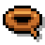 | Kablo makarası | Bulunduğun zemine, açıkta durduğu yere kablo döşer: bir servis geçidinde ya da kaldırılmış bir zemin karosunun altında. Bir kablo hattındaki boşluğu kapatmak elektriği geri getirir. | Servis Geçitleri · Robotik, Servis Geçitleri · EVA Hava Kilidi 2, Elektrik Atölyesi (3), İnvertör Odası, Pil Odası, Hava Tesisi, İnşaat Atölyesi (2), Makine Atölyesi (2), in a dolap, yer: Ambar Bölmesi, in a dolap, yer: Mürettebat Yatakhanesi (2), in a depo sandığı, yer: Servis Geçitleri · Güneş Paneli Kontrolü (2), in a depo sandığı, yer: Servis Geçitleri · İstasyon Şefi'nin Kamarası, in a depo sandığı, yer: Servis Geçitleri · Hava Tesisi, in a depo sandığı, yer: Servis Geçitleri · Nöbet Geçiş Tüpü, in a dolap, yer: Servis Geçitleri · Hava Tesisi (2), in a dolap, yer: Servis Geçitleri · Nöbet Geçiş Tüpü, in a depo sandığı, yer: Servis Geçitleri · Botanik (2), İstasyon Mühendisi kiti, talep konsolu siparişi (3 puan) |
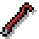 | Levye | Bir kapıyı zorla açar: elektriği olmayanı ya da basınç kilidinin mühürlediğini. Bulunduğun ya da baktığın karonun zemin karosunu kaldırır (2 saniye, öbür elin boşken): karo o ele girer. Bir dış duvara karşı kaplamayı söker (4 saniye), gövdeyi açmanın ilk adımı: kaplama bir gövde plakası olarak düşer. | Hava Tesisi (2), İnşaat Atölyesi (2), Makine Atölyesi, Servis Geçitleri · Robotik (2), Servis Geçitleri · Ambar Deposu, in a dolap, yer: Mürettebat Yatakhanesi, in a depo sandığı, yer: Servis Geçitleri · EVA Hava Kilidi 2, in a depo sandığı, yer: Servis Geçitleri · Botanik, in a dolap, yer: Servis Geçitleri · Nöbet Geçiş Tüpü, in a depo sandığı, yer: Servis Geçitleri · Savunma Odası, İstasyon Mühendisi kiti, Ambar Görevlisi kiti |
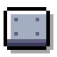 | Gövde plakası | Öbür elinde bir kaynak makinesi varken tutunca gövde yırtığını yamalar, sökülmüş duvara kaplamayı geri koyar ve çatlak bir duvarı yamalar (6 saniye). Tükenir. Bir duvarı sökmek bir tane düşürür. | Ambar Tezgâhı (2), Robotik (4), Servis Geçitleri · Robotik, Servis Geçitleri · Hava Tesisi, İnşaat Atölyesi (6), Makine Atölyesi (7), in a dolap, yer: Ambar Bölmesi, in a dolap, yer: İnşaat Atölyesi, in a depo sandığı, yer: Servis Geçitleri · Araştırma ve Geliştirme (2), in a depo sandığı, yer: Servis Geçitleri · İstasyon Şefi'nin Kamarası, in a depo sandığı, yer: Servis Geçitleri · EVA Hava Kilidi 2, in a depo sandığı, yer: Servis Geçitleri · Hava Tesisi, in a depo sandığı, yer: Servis Geçitleri · Nöbet Geçiş Tüpü, in a dolap, yer: Servis Geçitleri · Nöbet Geçiş Tüpü (2), in a depo sandığı, yer: Servis Geçitleri · Botanik, in a dolap, yer: Mürettebat Yatakhanesi, Bilim İnsanı kiti, talep konsolu siparişi (5 puan) |
| Kaynak makinesi | Bir yırtığın ya da sökülmüş kaplamanın üstüne bir gövde plakası kaynatır: plakayı etkin elde, kaynak makinesini öbür elde tut. Etkin elde bir kaynak makinesi varken, kaplaması sökülmüş bir duvarı da keser (6 saniye), bu gövdeyi uzaya açar ve aşınmış bir duvarı tek başına güçlendirir (4 saniye). | İnşaat Atölyesi, Makine Atölyesi (2), in a dolap, yer: İnşaat Atölyesi, İstasyon Mühendisi kiti | |
| Tornavida | Bir kapının bakım panelini açar ve yine kapatır (2 saniye). Kapının yanında dur ve etkin elinde tornavidayı tut; erişim gerekmez. İçindeki teller tel kesiciler, bir kablo makarası ve bir çok amaçlı alet içindir. | İnvertör Odası, Pil Odası, Hava Tesisi, Elektrik Atölyesi (2), Makine Atölyesi (2), in a depo sandığı, yer: Servis Geçitleri · Güneş Paneli Kontrolü, in a depo sandığı, yer: Servis Geçitleri · Hava Tesisi, in a dolap, yer: Servis Geçitleri · Hava Tesisi, in a depo sandığı, yer: Servis Geçitleri · Botanik, in a dolap, yer: Servis Geçitleri · Nöbet Geçiş Tüpü, İstasyon Mühendisi kiti, Bilim İnsanı kiti | |
| Çok amaçlı alet | Açık bir kapı panelindeki bir teli nabızlar; kapı böyle sürgülenir, sürgüsü açılır, sınanır ya da kartsız açılır: sürgüler, sürgü ışığı ve açma telleri üzerinde bir şey yapar; diğerlerine nabız hiçbir şey yapmaz. | Trafo Odası, Hava Tesisi, Elektrik Atölyesi (2), Makine Atölyesi, İstasyon Mühendisi kiti, Bilim İnsanı kiti | |
| T-ışını tarayıcısı | Elinde tut ve zemin karolarının altındaki 6 karo içindeki kablolar ekranında camgöbeği çerçeveyle görünür, boru tesisi olan bir haritada (Heron) oradaki borular da yeşil çerçeveyle; kaldırınca kaybolur. Yalnızca sen görürsün. Birini kesmek, döşemek ya da anahtarla sıkmak için önce karosunu bir levyeyle kaldır. | İnşaat Atölyesi, İstasyon Mühendisi kiti | |
| Zemin karosu | Bir levyenin bir koridor ya da bölüm zemininden kaldırdığı. Elde ya da sırt çantasında taşı; etkin elindeyken Zemin karosu koy, kaldırılmış bir karoyu yeniden kapatır ve alttaki kabloyu gizler. | İnşaat Atölyesi (4) | |
| İngiliz anahtarı | Cıvataları sıkmak ve gevşetmek için. Henüz hiçbir şey onu almaz: gelecekteki borular ve mobilya cıvataları alacak. Diğer aletlerle birlikte alet kemerinde taşınır ve makine atölyesinin rafında durur. Bir kaplaması olabilir: menüdeki Dolap'ta altı renk, şimdilik hepsi ücretsiz. Kaplama eşyanın kendisine aittir ve yalnızca görünümünü değiştirir. | Servis Geçitleri · Hava Tesisi, Hava Tesisi (3), Elektrik Atölyesi, İnşaat Atölyesi, Makine Atölyesi, in a depo sandığı, yer: Servis Geçitleri · İstasyon Şefi'nin Kamarası, in a depo sandığı, yer: Servis Geçitleri · Sicil Memuru'nun Odası, in a dolap, yer: Servis Geçitleri · Hava Tesisi, in a depo sandığı, yer: Servis Geçitleri · Güneş Paneli Kontrolü, İstasyon Mühendisi kiti, Bilim İnsanı kiti | |
| Yangın söndürücü | Tut ve Püskürt'e dokun: önünde, görüşteki herkesin gördüğü kısa beyaz bir sis. Zararsızdır ve henüz hiçbir şeyi söndürmez: gerçek yangınlar atmosfer yangın aşamasıyla gelir ve o zaman bu onlar için araçtır. Cep için fazla büyük; sırt çantasında taşınır. Bakım tünellerinde durur. | Servis Geçitleri · Robotik, Hava Tesisi (2), Servis Geçitleri · Hava Tesisi, Servis Geçitleri · Ambar Deposu, in a dolap, yer: Servis Geçitleri · Robotik, in a depo sandığı, yer: Servis Geçitleri · İstasyon Şefi'nin Kamarası, in a depo sandığı, yer: Servis Geçitleri · Sicil Memuru'nun Odası, in a depo sandığı, yer: Servis Geçitleri · Nöbet Geçiş Tüpü, in a dolap, yer: Servis Geçitleri · Hava Tesisi, in a dolap, yer: Servis Geçitleri · Nöbet Geçiş Tüpü (2), in a dolap, yer: Hava Tesisi, in a depo sandığı, yer: Servis Geçitleri · Savunma Odası | |
| Mum | Tut ve Mumu yak'a dokun (Mumu söndür onu söndürür): çevresindeki 2 karoyu aydınlatan küçük bir alev. Yanan bir mum bırakıldığı yerde yanmaya devam eder: yerde, bir masada ya da rafta; böylece bir lamba olur. Cepte, çantada ya da sandıkta sönüktür. Asla yanıp bitmez. Şapel sunağı baştan yanan iki tane tutar; daha fazlası servis geçitlerinde durur. Cebe sığacak kadar küçük. | Servis Geçitleri · EVA Hava Kilidi 2, Servis Geçitleri · Robotik, Servis Geçitleri · Ambar Deposu, Şapel (4), Mürettebat Yatakhanesi (3), in a depo sandığı, yer: Servis Geçitleri · Araştırma ve Geliştirme, in a dolap, yer: Servis Geçitleri · Robotik, in a depo sandığı, yer: Servis Geçitleri · İstasyon Şefi'nin Kamarası, in a depo sandığı, yer: Servis Geçitleri · Hava Tesisi, in a dolap, yer: Servis Geçitleri · Hava Tesisi (4), in a dolap, yer: Servis Geçitleri · Nöbet Geçiş Tüpü, in a dolap, yer: Servis Geçitleri · Yatakhane Tüpü, in a depo sandığı, yer: Servis Geçitleri · Botanik, in a depo sandığı, yer: Servis Geçitleri · Savunma Odası, Manevi Danışman kiti | |
| El feneri | Tut ve Işığı aç'a dokun: çevrene 5 karo parlar, seni görebilen herkes için, ve çevrendeki elektriksiz bir odanın ya da tünelin karanlığını kaldırır, böylece yine okuyabilirsin. Elde ya da cepte kıskaçlıyken parlar (tutulurken ya da cepte kıskaçlıyken yanar, görüştekilerin hepsi görür; elde aç ya da kapat, cep durumunu korur). Çantada, kemerde, sandıkta, yere konunca ya da düşünce karanlıktır. Pili yoktur. Cebe sığacak kadar küçük. Bakım tünellerinin raflarında, dolaplarında ve sandıklarında durur; madenciler de bir tane taşır. Bir kaplaması olabilir: menüdeki Dolap'ta altı renk, şimdilik hepsi ücretsiz. Kaplama eşyanın kendisine aittir ve yalnızca görünümünü değiştirir. | Servis Geçitleri · Robotik, Servis Geçitleri · Hava Tesisi, in a depo sandığı, yer: Servis Geçitleri · Güneş Paneli Kontrolü, in a dolap, yer: Servis Geçitleri · Hava Tesisi (2), in a depo sandığı, yer: Servis Geçitleri · EVA Hava Kilidi 2, in a depo sandığı, yer: Servis Geçitleri · Sicil Memuru'nun Odası, in a dolap, yer: Servis Geçitleri · İnşaat Atölyesi, in a dolap, yer: Servis Geçitleri · Nöbet Geçiş Tüpü (3), in a depo sandığı, yer: Servis Geçitleri · Botanik, in a dolap, yer: Trafo Odası, in a depo sandığı, yer: Servis Geçitleri · Savunma Odası, Tayfa kiti, İstasyon Şefi kiti, Sicil Memuru kiti, Nöbet Görevlisi kiti, Bakım Görevlisi kiti, Madenci kiti | |
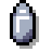 | Shaker | Bir shaker. Barmen birine sırt çantasında sahip olarak başlar, biri de barda durur. Bir elinde onu, öbüründe temiz bir bardak tutup Çalkala'ya dokun: her biri iki ya da üç şişeden 8 içecek. Her birinden bir ölçü, taşıdığın ya da erişimdeki bir rafta veya masada duran şişelerden gider. 3 saniyelik iştir (Barmen için yarısı) ve içecek bardağını doldurur. | Bar, Barmen kiti |
| Sıyırıcı | Güneş dizileri için uzun bir sıyırıcı. Kirişte tozlu bir panelin yanında tut ve Paneli sil'e dokun (8 saniye): panel temiz silinir. Toz vardiya boyunca her panele çöker ve tozlu her panel diziye biraz kaybettirir. Elektrik Atölyesi'ndeki bir raf ikisini tutar. | Bakım Deposu, Elektrik Atölyesi (2), in a dolap, yer: Tuvalet, Bakım Görevlisi kiti | |
| Gres kutusu | Bir dizinin takip eklemi için bir gres kutusu. Kirişte dizinin yanında tut ve Eklemi yağla'ya dokun (8 saniye): eklemin aşınmasını giderir, böylece dizi yine güneşi izler. Takılmış bir eklem önce cıvatalarının sıkılmasını ister (bir İngiliz anahtarı). Elektrik Atölyesi'ndeki bir raf ikisini tutar. | Elektrik Atölyesi (2) | |
| Ampul kutusu | Yedek ampuller için karton bir kutu: dolu olan 6 alır ve ampuller kullanıldıkça içinde azı olan aynı kutudur (adı kaç tane kaldığını söyler). Her odada, gerçek bir vardiyada ampulü ara sıra yanan bir tavan lambası vardır (12 dakikada oda başına yaklaşık bir, aynı anda en çok 3 oda karanlık): odanın lambasından 3 karodan uzak kısmı kararır (lambada karanlık bir duy görünür). Kutuyu lambanın yanında tut ve Ampulü değiştir'e dokun (3 saniye). Bakım Görevlisi'nin dolabında daha fazla kutu var. | Bakım Deposu (2), Bakım Görevlisi kiti | |
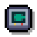 | Kalınlık ölçer | Elde ya da cepte tut ve 6 karo içindeki dış duvarlar, duvarların arkasından bile, ekranında üstlerinde kalan kaplamayla (yeşil, kehribar, kırmızı) bir işaret gösterir. Yalnızca sen görürsün. Aşınmayı gözden önce gösterir: bir leke aşınmış bir duvar, ince bir çatlak bir sızıntıdır. Aşınmış bir duvarı kaynak makinesiyle güçlendir; çatlak olanı bir plaka ve kaynak makinesiyle yamala. İnşaat Atölyesi'ndeki bir raf birini tutar. | İnşaat Atölyesi |
| Sulama kabı (boş) | Bir sulama kabı: 4 sulama alır (şimdi 0 tanesi dolu). Onu serada lavaboda doldur (Kabı doldur, 3 saniye), sonra bir tepsinin yanında Sula'ya dokun (3 saniye, Botanikçi için yarısı): tepsinin suyu 50 artar. | Botanik (2), Botanikçi kiti | |
| Sulama kabı (1/4) | Bir sulama kabı: 4 sulama alır (şimdi 1 tanesi dolu). Onu serada lavaboda doldur (Kabı doldur, 3 saniye), sonra bir tepsinin yanında Sula'ya dokun (3 saniye, Botanikçi için yarısı): tepsinin suyu 50 artar. | — | |
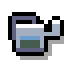 | Sulama kabı (1/2) | Bir sulama kabı: 4 sulama alır (şimdi 2 tanesi dolu). Onu serada lavaboda doldur (Kabı doldur, 3 saniye), sonra bir tepsinin yanında Sula'ya dokun (3 saniye, Botanikçi için yarısı): tepsinin suyu 50 artar. | — |
| Sulama kabı (3/4) | Bir sulama kabı: 4 sulama alır (şimdi 3 tanesi dolu). Onu serada lavaboda doldur (Kabı doldur, 3 saniye), sonra bir tepsinin yanında Sula'ya dokun (3 saniye, Botanikçi için yarısı): tepsinin suyu 50 artar. | — | |
| Sulama kabı | Bir sulama kabı: 4 sulama alır (şimdi 4 tanesi dolu). Onu serada lavaboda doldur (Kabı doldur, 3 saniye), sonra bir tepsinin yanında Sula'ya dokun (3 saniye, Botanikçi için yarısı): tepsinin suyu 50 artar. | — | |
| Gübre çuvalı (1 kullanım) | Bir gübre çuvalı: tam doluyken 5 kullanım (bunda 1 kaldı). Bir tepsinin yanında Gübrele'ye dokun (4 saniye, Botanikçi için yarısı): besini 50 artar ve iyi beslenen bir bitki daha hızlı büyür ve bir ürün daha verir. Ambar dolu bir çuvalı 3 tedarik puanına satar; kompost kutusu bir çuvalı yeniden doldurur. | — | |
| Gübre çuvalı (2 kullanım) | Bir gübre çuvalı: tam doluyken 5 kullanım (bunda 2 kaldı). Bir tepsinin yanında Gübrele'ye dokun (4 saniye, Botanikçi için yarısı): besini 50 artar ve iyi beslenen bir bitki daha hızlı büyür ve bir ürün daha verir. Ambar dolu bir çuvalı 3 tedarik puanına satar; kompost kutusu bir çuvalı yeniden doldurur. | — | |
| Gübre çuvalı (3 kullanım) | Bir gübre çuvalı: tam doluyken 5 kullanım (bunda 3 kaldı). Bir tepsinin yanında Gübrele'ye dokun (4 saniye, Botanikçi için yarısı): besini 50 artar ve iyi beslenen bir bitki daha hızlı büyür ve bir ürün daha verir. Ambar dolu bir çuvalı 3 tedarik puanına satar; kompost kutusu bir çuvalı yeniden doldurur. | — | |
| Gübre çuvalı (4 kullanım) | Bir gübre çuvalı: tam doluyken 5 kullanım (bunda 4 kaldı). Bir tepsinin yanında Gübrele'ye dokun (4 saniye, Botanikçi için yarısı): besini 50 artar ve iyi beslenen bir bitki daha hızlı büyür ve bir ürün daha verir. Ambar dolu bir çuvalı 3 tedarik puanına satar; kompost kutusu bir çuvalı yeniden doldurur. | — | |
| Gübre çuvalı | Bir gübre çuvalı: tam doluyken 5 kullanım (bunda 5 kaldı). Bir tepsinin yanında Gübrele'ye dokun (4 saniye, Botanikçi için yarısı): besini 50 artar ve iyi beslenen bir bitki daha hızlı büyür ve bir ürün daha verir. Ambar dolu bir çuvalı 3 tedarik puanına satar; kompost kutusu bir çuvalı yeniden doldurur. | Botanik, talep konsolu siparişi (3 puan) | |
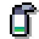 | Bitki spreyi (1 kullanım) | Bir bitki spreyi: tam doluyken 4 kullanım. Yayılmadan iyileştirmek için yanıklı ya da yaprak bitli bir tepsinin yanında Tedavi et'e dokun (5 saniye, Botanikçi için yarısı). Ambar dolu bir tanesini 2 tedarik puanına satar. | — |
| Bitki spreyi (2 kullanım) | Bir bitki spreyi: tam doluyken 4 kullanım. Yayılmadan iyileştirmek için yanıklı ya da yaprak bitli bir tepsinin yanında Tedavi et'e dokun (5 saniye, Botanikçi için yarısı). Ambar dolu bir tanesini 2 tedarik puanına satar. | — | |
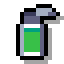 | Bitki spreyi (3 kullanım) | Bir bitki spreyi: tam doluyken 4 kullanım. Yayılmadan iyileştirmek için yanıklı ya da yaprak bitli bir tepsinin yanında Tedavi et'e dokun (5 saniye, Botanikçi için yarısı). Ambar dolu bir tanesini 2 tedarik puanına satar. | — |
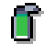 | Bitki spreyi | Bir bitki spreyi: tam doluyken 4 kullanım. Yayılmadan iyileştirmek için yanıklı ya da yaprak bitli bir tepsinin yanında Tedavi et'e dokun (5 saniye, Botanikçi için yarısı). Ambar dolu bir tanesini 2 tedarik puanına satar. | Botanik, talep konsolu siparişi (2 puan) |
| Kelepçe | Bir çift çelik kelepçe; Nöbet Görevlisi iki tane taşır. Onları tut ve birinin yanında Kelepçele'ye dokun (3 saniye) ya da sersemlemiş ya da yerde yatan birine dokun: durdukları yerde kalmalılar, yoksa kelepçeler kayıp düşer. Kelepçeli bir oyuncu ellerini kullanamaz (hiçbir şey alınmaz, bırakılmaz, giyilmez ya da çalışılmaz), adım başına bir tık daha yavaş yürür ve yine de konuşabilir ve aranabilir. Bir Nöbet Görevlisi ya da İstasyon Şefi kelepçeyi 2 saniyede çıkarır; başkası 10 saniyeye ve boş bir ele ihtiyaç duyar ve kelepçeleri alıkoyar. Bir hücre cezası bitince de çıkarlar. | in a dolap, yer: Silah Odası (3), Nöbet Görevlisi kiti | |
| Paspas | Bakım Görevlisi'nin paspası. Öbür elinde suyu kalmış bir kova ile tut, bir birikintiye 2 karo içinde dur ve Zemini sil'e dokun (2 saniye, birikinti başına kovadan bir daldırma). Yalnızca birikintileri temizler: kan yoktur ve haritanın zemin süslemeleri kalır. | Bakım Deposu (2), Bakım Görevlisi kiti | |
| Kova (boş) | En çok 4 daldırma alan bir paspas kovası (adı kaç tane kaldığını söyler). Onu bir lavaboda (lavabonun, Botanik'in ya da herhangi bir el yıkama yerinin) Kova doldur ile doldur (4 saniye). İçindekini yere tek bir birikinti olarak boşaltmak için Kovayı devir'e dokun: paspas dışında onunla yapılacak başka bir şey yok. | Bakım Deposu (2), Bakım Görevlisi kiti | |
| Kova (1 daldırma) | En çok 4 daldırma alan bir paspas kovası (adı kaç tane kaldığını söyler). Onu bir lavaboda (lavabonun, Botanik'in ya da herhangi bir el yıkama yerinin) Kova doldur ile doldur (4 saniye). İçindekini yere tek bir birikinti olarak boşaltmak için Kovayı devir'e dokun: paspas dışında onunla yapılacak başka bir şey yok. | — | |
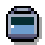 | Kova (2 daldırma) | En çok 4 daldırma alan bir paspas kovası (adı kaç tane kaldığını söyler). Onu bir lavaboda (lavabonun, Botanik'in ya da herhangi bir el yıkama yerinin) Kova doldur ile doldur (4 saniye). İçindekini yere tek bir birikinti olarak boşaltmak için Kovayı devir'e dokun: paspas dışında onunla yapılacak başka bir şey yok. | — |
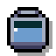 | Kova (3 daldırma) | En çok 4 daldırma alan bir paspas kovası (adı kaç tane kaldığını söyler). Onu bir lavaboda (lavabonun, Botanik'in ya da herhangi bir el yıkama yerinin) Kova doldur ile doldur (4 saniye). İçindekini yere tek bir birikinti olarak boşaltmak için Kovayı devir'e dokun: paspas dışında onunla yapılacak başka bir şey yok. | — |
| Kova | En çok 4 daldırma alan bir paspas kovası (adı kaç tane kaldığını söyler). Onu bir lavaboda (lavabonun, Botanik'in ya da herhangi bir el yıkama yerinin) Kova doldur ile doldur (4 saniye). İçindekini yere tek bir birikinti olarak boşaltmak için Kovayı devir'e dokun: paspas dışında onunla yapılacak başka bir şey yok. | — | |
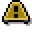 | Islak zemin tabelası | Yer çekimi olan istasyonlar için sarı bir ıslak zemin tabelası (Millrace ve Kestrel; Heron ağırlıksızdır, orada kimse kaymaz ve tabelası yoktur). Boş bir zemin karosuna erişimde Islak zemin tabelası koy'a dokun: o karoda 2 dakika kimse kaymaz, sonra tabela alınmak üzere yine orada durur. Bakım Görevlisi oraya iki tane taşır. | Bakım Görevlisi kiti |
| Ampul kutusu (5) | Yedek ampuller için karton bir kutu: dolu olan 6 alır ve ampuller kullanıldıkça içinde azı olan aynı kutudur (adı kaç tane kaldığını söyler). Her odada, gerçek bir vardiyada ampulü ara sıra yanan bir tavan lambası vardır (12 dakikada oda başına yaklaşık bir, aynı anda en çok 3 oda karanlık): odanın lambasından 3 karodan uzak kısmı kararır (lambada karanlık bir duy görünür). Kutuyu lambanın yanında tut ve Ampulü değiştir'e dokun (3 saniye). Bakım Görevlisi'nin dolabında daha fazla kutu var. | — | |
| Ampul kutusu (4) | Yedek ampuller için karton bir kutu: dolu olan 6 alır ve ampuller kullanıldıkça içinde azı olan aynı kutudur (adı kaç tane kaldığını söyler). Her odada, gerçek bir vardiyada ampulü ara sıra yanan bir tavan lambası vardır (12 dakikada oda başına yaklaşık bir, aynı anda en çok 3 oda karanlık): odanın lambasından 3 karodan uzak kısmı kararır (lambada karanlık bir duy görünür). Kutuyu lambanın yanında tut ve Ampulü değiştir'e dokun (3 saniye). Bakım Görevlisi'nin dolabında daha fazla kutu var. | — | |
| Ampul kutusu (3) | Yedek ampuller için karton bir kutu: dolu olan 6 alır ve ampuller kullanıldıkça içinde azı olan aynı kutudur (adı kaç tane kaldığını söyler). Her odada, gerçek bir vardiyada ampulü ara sıra yanan bir tavan lambası vardır (12 dakikada oda başına yaklaşık bir, aynı anda en çok 3 oda karanlık): odanın lambasından 3 karodan uzak kısmı kararır (lambada karanlık bir duy görünür). Kutuyu lambanın yanında tut ve Ampulü değiştir'e dokun (3 saniye). Bakım Görevlisi'nin dolabında daha fazla kutu var. | — | |
| Ampul kutusu (2) | Yedek ampuller için karton bir kutu: dolu olan 6 alır ve ampuller kullanıldıkça içinde azı olan aynı kutudur (adı kaç tane kaldığını söyler). Her odada, gerçek bir vardiyada ampulü ara sıra yanan bir tavan lambası vardır (12 dakikada oda başına yaklaşık bir, aynı anda en çok 3 oda karanlık): odanın lambasından 3 karodan uzak kısmı kararır (lambada karanlık bir duy görünür). Kutuyu lambanın yanında tut ve Ampulü değiştir'e dokun (3 saniye). Bakım Görevlisi'nin dolabında daha fazla kutu var. | — | |
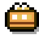 | Ampul kutusu (1) | Yedek ampuller için karton bir kutu: dolu olan 6 alır ve ampuller kullanıldıkça içinde azı olan aynı kutudur (adı kaç tane kaldığını söyler). Her odada, gerçek bir vardiyada ampulü ara sıra yanan bir tavan lambası vardır (12 dakikada oda başına yaklaşık bir, aynı anda en çok 3 oda karanlık): odanın lambasından 3 karodan uzak kısmı kararır (lambada karanlık bir duy görünür). Kutuyu lambanın yanında tut ve Ampulü değiştir'e dokun (3 saniye). Bakım Görevlisi'nin dolabında daha fazla kutu var. | — |
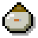 | Cevher çantası | Cevher için kanvas bir çanta: 6 parça alır ve elde taşınır (sırt çantası için fazla büyük). Çanta öbür elindeyken sondaj yapmak cevheri doğrudan içine koyar, kayadan Al da öyle. Rafineride, çanta etkin elindeyken Cevher yükle, hazne (12) alabildiği kadarını boşaltır. Çanta, bir elde ya da kemerin kancasındayken yanındaki yerde duran dağınık cevheri de alır (Al, iki elin de dolu olsa bile); Çantayı boşalt tüm cevheri ayaklarının dibine bırakır, rafinerinin yanındaysan doğrudan hazneye döker. | Maden Rıhtımı, Madenci kiti |
| El matkabı | Madenci'in el matkabı. Maden sahasında (maden mekiğiyle varılan havasız bir kaya tarlası; ip yok) etkin elinde tut, hâlâ cevheri olan bir yataktan en çok 2 karo uzakta dur ve Cevher kaz'a dokun (4 saniye, birer parça; bir yatakta 2 ya da 3 parça vardır, sonra vardiyanın sonuna kadar boştur). Demir zengini yataklar demir cevheri, bakır zenginleri bakır cevheri, nadir olanlar kristal verir. | Maden Rıhtımı, Madenci kiti | |
| Boru | Makine Atölyesi'ndeki tornada yapılmış bir boru parçası (2 plaka, 6 saniye). Elinde tutan bir İstasyon Mühendisi, tesisin borularındaki bir boşlukta (bir borunun kesildiği ya da çıkarıldığı yerde: karo karanlık bir boşluk gösterir) Boru döşe'ye dokunur ve parça döşenip sabitlenir. Asla yeni bir çalıştırma başlatmaz: tesis kurulmuştur ve yalnızca onarılır. Gevşek bir boru desteğinden çekilebilir (Boruyu çek: parça sonra seni bir karo arkandan, bir sandık gibi izler ve bir boşluk kalır); onu al ya da bir boşluğa sürükle ve oraya döşe. | — | |
| Vana seti | Bir valfin parçaları, Makine Atölyesi'ndeki tornada yapılmış (3 plaka, 10 saniye). Elinde tutan bir İstasyon Mühendisi, bozuk bir valfin yanında Valf kitini tak'a dokunur (üstünde kırmızı bir çarpı vardır) ve makine yine çalışır. | — | |
| Pompa seti | Bir pompanın parçaları, Makine Atölyesi'ndeki tornada yapılmış (4 plaka, 14 saniye). Elinde tutan bir İstasyon Mühendisi, bozuk bir pompanın yanında Pompa kitini tak'a dokunur (üstünde kırmızı bir çarpı vardır) ve makine yine çalışır. | — | |
| Menfez seti | Bir havalandırmanın parçaları, Makine Atölyesi'ndeki tornada yapılmış (2 plaka, 8 saniye). Elinde tutan bir İstasyon Mühendisi, bozuk bir havalandırmanın yanında Havalandırma kitini tak'a dokunur (üstünde kırmızı bir çarpı vardır) ve makine yine çalışır. | — | |
| Temizleyici seti | Bir temizleyicinin parçaları, Makine Atölyesi'ndeki tornada yapılmış (2 plaka, 8 saniye). Elinde tutan bir İstasyon Mühendisi, bozuk bir temizleyicinin yanında Temizleyici kitini tak'a dokunur (üstünde kırmızı bir çarpı vardır) ve makine yine çalışır. | — | |
| Tazer | Bir el tasersi: tut ve nereye ateş edeceksen haritaya dokun ya da kişiye dokun: bir cıvata senden dokunduğun noktadan geçen tam hat boyunca, karo karo, 5 karoya kadar uçar (duvar ya da kapalı bir kapı durdurur) ve ulaştığı karoda duran ilk kişiye çarpar. Senin yerine nişan alan yok: bir kişiye dokunmak yalnızca yönü belirler; hattan zamanında çekilen ıskalanır. Listedeki Sersemlet düğmesi hâlâ düz hattaki en yakın kişiye ateş eder. Cıvata kaslarını 5 saniye kilitler (adım yok, iş yok) ve hasar vermez. Bir sonraki atıştan önce şarj olmak için 12 saniyeye ihtiyaç duyar. Kelepçeli ya da yerdeki birine ateş etmez. Başkaları için tehlike olan birini uzaktan durdurmak ve sonra kelepçelemek için kullan: Daimi Talimatlar işe yarayan en az gücü kullanmayı söyler. | in a dolap, yer: Silah Odası (3), Nöbet Görevlisi kiti | |
| Cop | Kısa bir cop: tut ve yanındaki (bir karo içindeki) birine dokunup vur; daha uzaktaki birine dokunmak hiçbir şey yapmaz, yalnızca Çok uzak işaretini yakar. Bir darbe 6 darbe hasarı verir ve onları 2 saniye sersemletir; darbeler arasında bir saniye vardır. Kelepçeli, yerdeki ya da ölü birine vurmaz (İstasyon Yasası: gözaltındakine vurulmaz). Bir ekip üyesine vurmak, görevli bir tehlikeyi durdurmuyorsa 2. sınıf bir suçtur; taser ve spreyden sonra son adım için sakla ve rapora yaz. | in a dolap, yer: Silah Odası (3), Nöbet Görevlisi kiti | |
| Biber gazı | Bir kutu biber gazı: tut ve birine doğru dokun: sprey tam hat boyunca 2 karo uçar ve ulaştığı ilk kişiyi kör eder. Gözleri kapanır ve yanar ve 8 saniye göremezler (ekran yanık gözlerdeki gibi kararır, sonra kendiliğinden açılır), kaynak gözlüğü ya da EVA kaskı takmıyorlarsa. Bir sonraki püskürtme için 15 saniyeye ihtiyaç duyar ve kelepçeli ya da yerdeki birine sıkmaz. Daha güçlü bir güçten önce bir kalabalığı ya da koşan birini durdurup dinlemeye zorlamak için kullan. | in a dolap, yer: Silah Odası (3), Nöbet Görevlisi kiti | |
| Vantuz | Bakım Görevlisi'nin lavabo pompası. Tıkalı bir atık borusunun erişiminde dur (harita tıkanıklığı tavandan sarkarken gösterir), etkin elinde onunla Tıkanıklığı aç'a dokun (3 saniye, Bakım Görevlisi için iki kat hızlı). Tükenmez. Biri Bakım Görevlisi'nin Dolabı'nda durur. | Bakım Deposu | |
| Oksijen tüpü | Tedarik konsolundan bir oksijen gaz tüpü (10 puan). Sırt çantası için fazla büyük. Atmosfer'deki gaz tüpü portunun yanında, öbür elinde bir İngiliz anahtarıyla, Tüpü porta sık'a dokun: 20 saniyede tesisin O2 deposuna 30000 mol boşaltır, sonra boş tüp portun yanında kalır. | talep konsolu siparişi (10 puan), tedarik konsolu, 10 puan için | |
| Azot tüpü | Tedarik konsolundan bir azot gaz tüpü (10 puan). Sırt çantası için fazla büyük. Atmosfer'deki gaz tüpü portunun yanında, öbür elinde bir İngiliz anahtarıyla, Tüpü porta sık'a dokun: 20 saniyede tesisin N2 deposuna 30000 mol boşaltır, sonra boş tüp portun yanında kalır. | talep konsolu siparişi (10 puan), tedarik konsolu, 10 puan için | |
| Boş gaz tüpü | Tesise boşaltılmış bir gaz tüpü. Onu Ambar Bölmesi'ndeki teslimat platformuna taşı ve platformla gönder: 2 tedarik puanı. Sırt çantası için fazla büyük. | portta deposuna boşaltılmış bir gaz tüpü | |
| Servo seti | Servo seti: Robotik tezgâhının bir parçası (gövde plakası ve bakır çubuktan yapılır). Öbür elde, etkin elde bir tornavida varken, bir robotun eklemlerine takılır: iş yarı sürer ve robot doğrultulur. Basınç contası ve Taşıma dronu birinden yapılır. Sırt çantasına girer. | Robotik tezgâhı, Servo setleri projesi serbest bırakılınca (prototipi incelenmiş bir bulgudan yapılır) | |
| Sızdırmazlık contası | Mühürleme contası: Robotik tezgâhının bir parçası (gövde plakası ve baz reaktifinden yapılır). Basınç tutan kesik bir halka: Basınç contası, Taşıma dronunun rotoru ve Zırhlı siperlik birinden yapılır. Sırt çantasına girer. | Robotik tezgâhı (bir plaka ve bir baz reaktifi): bir parça, araştırma gerekmez | |
| Basınç contası | Bir basınç contası (servo seti ve mühürleme contasından yapılır). Etkin elde, öbüründe bir kaynak makinesi varken, bir yırtığı, sökülmüş bir duvarı ya da çatlak bir duvarı yarı sürede ve gövde plakası olmadan yamalar (Yırtığı yamala); tükenir. Bitmiş bir projeden gelir: ilk olan saha denemesindeki bir prototiptir ve bir prototip sızdırıp bozulabilir. | Robotik tezgâhı, Basınç contası projesi serbest bırakılınca | |
| Taşıma dronu | Bir taşıma dronu (servo seti ve gövde plakasından yapılır). Üstünde bir sandık olan teslimat platformunun yanında dronu tut ve Sandığı dronla gönder'e dokun: sandık 12 saniye sonra talep konsolunun yanına iner ve dron tükenir. Bir prototip dron arızalanıp havadan düşebilir. | Robotik tezgâhı, Taşıma dronu projesi serbest bırakılınca | |
| Ayaklı lamba | Heron'un Merkezinde, Ekip Odaları'nda ve Kütüphanesi'nde baştan yanan, uzun bir ayaklı lamba. Yanında dur ve Lambayı kapat'a (ya da Lambayı aç'a) dokun: durduğu yerde açılıp kapanır. Boş bir elle al (cebe sığmayacak kadar büyük) ve ışığını taşımak için Lambayı aç ya da Lambayı kapat'a dokun: çevresinde 4 karo, görüştekilerin hepsi görür ve yere konunca da yanmaya devam eder. Kapalı bir lamba hiç ışık vermez. Telefona hiçbir şeye mal olmaz: bir mum gibi tek bir ışık. Cairn'deki gibi istasyonun parçası olan bir ayaklı lamba da aynı şekilde açılıp kapanır, taşınamaz ve yalnızca odasında elektrik varken ışık verir. | Kütüphane, Mürettebat Yatakhanesi (2), Merkez Salon (5), Bar | |
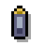 | Çakmak | Başparmakla yakılan küçük bir çakmak: etkin elinde tut ve bir bayrağın (bir karo içinde yatan ya da öbür elinde) yanında Bayrağı yak'a dokun. Tükenmez. Şapel'in sunağında durur. Bir kaplaması olabilir: menüdeki Dolap'ta altı renk, şimdilik hepsi ücretsiz. Kaplama eşyanın kendisine aittir ve yalnızca görünümünü değiştirir. | Şapel |
| Kibrit kutusu (5) | Bir kutu kibrit; adı kaç tane kaldığını söyler (yeniyken beş). Etkin elinde tut ve bir bayrağın yanında Bayrağı yak'a dokun: bir kibrit çakılır ve tükenir; sonuncuyla kutu da biter. Biri servis geçitlerinin dolaplarında durur. | Servis Geçitleri · Ambar Deposu, Şapel | |
| Kibrit kutusu (4) | Bir kutu kibrit; adı kaç tane kaldığını söyler (yeniyken beş). Etkin elinde tut ve bir bayrağın yanında Bayrağı yak'a dokun: bir kibrit çakılır ve tükenir; sonuncuyla kutu da biter. Biri servis geçitlerinin dolaplarında durur. | — | |
| Kibrit kutusu (3) | Bir kutu kibrit; adı kaç tane kaldığını söyler (yeniyken beş). Etkin elinde tut ve bir bayrağın yanında Bayrağı yak'a dokun: bir kibrit çakılır ve tükenir; sonuncuyla kutu da biter. Biri servis geçitlerinin dolaplarında durur. | — | |
| Kibrit kutusu (2) | Bir kutu kibrit; adı kaç tane kaldığını söyler (yeniyken beş). Etkin elinde tut ve bir bayrağın yanında Bayrağı yak'a dokun: bir kibrit çakılır ve tükenir; sonuncuyla kutu da biter. Biri servis geçitlerinin dolaplarında durur. | — | |
| Kibrit kutusu (1) | Bir kutu kibrit; adı kaç tane kaldığını söyler (yeniyken beş). Etkin elinde tut ve bir bayrağın yanında Bayrağı yak'a dokun: bir kibrit çakılır ve tükenir; sonuncuyla kutu da biter. Biri servis geçitlerinin dolaplarında durur. | — | |
| Isı tabancası | Gri uçlu turuncu bir ısı tabancası, Cairn İstasyonu'nda Mühendis'in buza karşı aleti. Etkin elinde tut ve açıkta duran donmuş bir ısıtma borusunun yanında dur (servis geçidinde, makine dairesinde ya da levyenin kaldırdığı bir zemin karosunun altında): Boruyu çöz'e dokun, 8 saniyelik süreli bir iş. Donmuş kesiti çözer: boru boyunca iki yana 2 karo. Hâlâ donan bir odadaki çözülmüş boru, döngü çalışmıyorsa bir dakikada yeniden donar: kazandan dışa doğru çöz ya da pompayı Düşük'e alıp işi sıcak suya bırak. | Cairn İstasyonu'nda Isı Kontrol'ün rafı ve dolabı ile Jeneratör Barakası | |
| Adli tarayıcı | Mor mercekli, küçük yeşil ekranlı kurşuni mavi bir el cihazı: Nöbet Görevlisi'nin adli tarayıcısı. Etkin elinde tut ve sana 2 karo içindeki bir karoya dokun ya da Burayı tara'ya dokun: 6 saniyelik bir iş; karoya 2 karo içindeki izleri (parmak izi, lif, kan, kalıntı; göz bunların hiçbirini görmez) tarayıcının belleğine alır (son 6 iz saklanır) ve bir İz fişi basar: ne, nerede, ne kadar eski ve whorl-3 gibi kaba bir desen kodu; asla bir isim. İzler yaklaşık dört dakikada solar; bir paspas ya da kalabalık onları siler, bu yüzden erken tara. | in a dolap, yer: Silah Odası, Nöbet Bürosu'nun silah dolabı (istasyon başına bir tane) | |
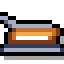 | Kızak | Ambar Görevlisi'nin kızağı: iki kızak ayağı üzerinde uzun, turuncu bir gövde; Cairn İstasyonu'nda Kızak Barakası'nda durur. Alınamaz: ona dokun ve Çek; adımlarını izler, avlunun buzunda da zeminde olduğu gibi (Serbest bırak elinden bırakır). Buz için bir arabadır: Sandığı yükle, yanındaki bir sandığı üstüne koyar (6 sandık taşır, arabanın iki katı) ve Sandığı boşalt sonuncuyu indirir. Avlunun kızak şeridini kesen bir kar yığını, kürek yolu açana kadar onu durdurur. Millrace İstasyonu'nda Dalış Havuzu'nda bekler: çekilirken seninle dalar ve seninle yukarı çıkar, üstünde taşıdıkları da: Ambar Görevlisi'nin yukarıdan indirilen sandıkları içeri alma yolu. Sedye olarak da işe yarar: yanında bilinci kapalı biri varken Kızağa yatır'a dokun ve onu içeri çek; Kızaktan indir onu yere bırakır. | Cairn İstasyonu'ndaki Kızak Barakası ve Millrace İstasyonu'ndaki Dalış Havuzu |
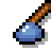 | Kürek | Kar küreği: uzun tahta saplı, geniş mavi ağızlı; Cairn İstasyonu'nda Bakım Deposu'ndan ve Kızak Barakası'ndan. Etkin elinde tut, avlunun kızak şeridindeki bir kar yığınının yanında Yığını kürekle'ye dokun (6 saniye): yığın gider ve kızak geçer. Şeritte ara sıra kar yığınları oluşur; aynı anda 3 taneden fazlası olmaz. | Cairn İstasyonu'nda Bakım Deposu'nun ve Kızak Barakası'nın rafları |
| Taahhüt flaması | Koyu bir çubuktan sarkan, kırmızı şeritli krem renkli bir bez flama: ellerde taşınan bir taahhüt. Sözleri sabittir ("Aşağıda imzası olanlar, İstasyon Şefi'nden tayın paketleri konusunda tayfayı dinlemesini rica ederiz."); üzerine kimse yazmaz. Taşıyıcısı, İstasyon Şefi, Sicil Memuru ya da Nöbet Görevlisi olmayan ve flamaya 2 karo yakınında duran herkes Taahhüdü imzala'ya dokunabilir: adı listesine yazılır, yakındakiler görür ve Adımı çıkar her şeyi eski haline getirir. Listeyi oku kimin imzaladığını gösterir. Flamayı yalnızca bir hikâye rolü verir; taşıyıcı ondan bir Taahhüt listesi basar (isimler o an yazıldığı gibi) ve süre dolmadan faksla ya da dolapla İstasyon Şefi ya da Sicil Memuru odasına ulaştırır. | yalnızca bir hikâye rolü verir: Örgütleyici taşır |
Sağlık
| Eşya | Ne yapar | Nereden alınır | |
|---|---|---|---|
| İlk yardım çantası | Tut ve erişimdeki birinin yanında (ya da kendini) Tedavi et'e dokun: hasarının en kötüsünden 30 puan düşer (çanta tükenmez) ve baygınlar uyanır. Ya da İlk yardım çantasını aç'a dokun: ayaklarının dibinde 3 bandaj, 2 yanık merhemi, 2 antitoksin hapı ve bir epinefrin kalemi tutan bir kutuya açılır; listesinden birer birer çıkarırsın. Kemer için fazla büyük: elde ya da sırt çantanda taşı. | Revir (3), in a dolap, yer: Revir (3), in a dolap, yer: Mürettebat Yatakhanesi, in a dolap, yer: Kimya (2), Doktor kiti, talep konsolu siparişi (5 puan) | |
| Defibrilatör | 3 dakikadan kısa süre önce ölen birini geri getirir; 20 sağlıkla kalkar ve yine de tedavi gerekir. | Revir, Doktor kiti | |
| Nezle ilacı | Nezle ya da gribe yakalanınca al: tut ve İlaç al'a dokun. Tam 4 dakika (nezle) ya da 7 dakika (grip) yerine 30 saniyede iyileşirsin. Tükenir. Revir bazılarını tutar. Hasta olmayan biri için hiçbir şey yapmaz. | Revir (3), in a dolap, yer: Kimya (5) | |
| Sağlık analizörü | Tut ve yanındaki birinin (ya da kendinin) yanında Tara'ya dokun: 2 saniye kıpırdamadan durunca yalnızca sana listeler: sağlığı, canlı, baygın ya da ölü olup olmadığı, nezle ya da grip ve ne kadar ilerlediği, yanık gözler ve ne kadar aç olduğu ve dört hasar türü sayılarla (darbe, yanık, toksin, oksijen). İlk evresindeki, henüz belirti vermeyen bir nezle ya da grip burada hiçbir şey göstermez: yalnızca bir stetoskop duyar. Başkasına bildirilmez. Doktor tıbbi kemerde birle başlar; yedekleri bir Revir'in masasında ve Revir'in dolabında. | Revir, in a dolap, yer: Revir, Doktor kiti | |
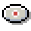 | Bandaj | Darbe hasarı için tek kullanımlık bir tedavi. Tut ve birinin yanında Tedavi et'e dokun (ya da kendini tedavi et): 3 saniye sonra (Doktor için yarısı) darbe hasarından 15 puan düşer; başkası, Heron seyir defterindeki ilk yardım becerisi olmadan, bunun yalnızca yüzde 50 kadarını düşer. Sağlık analizörü dört hasar türünü listeler. Tıbbi kemere, cebe ve sırt çantasına sığar ve ilk yardım çantasından, Revir'in dolaplarından ve (reaktiflerden yapılmış) Kimya'dan gelir. | Revir (2), in a dolap, yer: Kimya (4), Madenci kiti |
| Yanık merhemi | Yanık hasarı için tek kullanımlık bir tedavi. Tut ve birinin yanında Tedavi et'e dokun (ya da kendini tedavi et): 3 saniye sonra (Doktor için yarısı) yanık hasarından 15 puan düşer; başkası, Heron seyir defterindeki ilk yardım becerisi olmadan, bunun yalnızca yüzde 50 kadarını düşer. Sağlık analizörü dört hasar türünü listeler. Tıbbi kemere, cebe ve sırt çantasına sığar ve ilk yardım çantasından, Revir'in dolaplarından ve (reaktiflerden yapılmış) Kimya'dan gelir. | Revir, in a dolap, yer: Kimya (3) | |
| Antitoksin hapı | Toksin hasarı için tek kullanımlık bir tedavi. Tut ve birinin yanında Tedavi et'e dokun (ya da kendini tedavi et): 3 saniye sonra (Doktor için yarısı) toksin hasarından 15 puan düşer; başkası, Heron seyir defterindeki ilk yardım becerisi olmadan, bunun yalnızca yüzde 50 kadarını düşer. Sağlık analizörü dört hasar türünü listeler. Tıbbi kemere, cebe ve sırt çantasına sığar ve ilk yardım çantasından, Revir'in dolaplarından ve (reaktiflerden yapılmış) Kimya'dan gelir. | in a dolap, yer: Kimya (3) | |
| Epinefrin kalemi | Oksijen hasarı için tek kullanımlık bir tedavi. Tut ve birinin yanında Tedavi et'e dokun (ya da kendini tedavi et): 2 saniye sonra (Doktor için yarısı) oksijen hasarından 20 puan düşer; başkası, Heron seyir defterindeki ilk yardım becerisi olmadan, bunun yalnızca yüzde 50 kadarını düşer. Sağlık analizörü dört hasar türünü listeler. Tıbbi kemere, cebe ve sırt çantasına sığar ve ilk yardım çantasından, Revir'in dolaplarından ve (reaktiflerden yapılmış) Kimya'dan gelir. Baygın birini de 10 saniyeliğine uyandırır, sağlığı sıfırda kalsa bile: sonra yine düşerler. | in a dolap, yer: Kimya, Madenci kiti | |
| Morfin şırıngası | Kısıtlı bir ağrı kesici; Revir ile Kimya arasındaki kilitli dolapta, Millrace İstasyonu'nda Revir'in kendi kilitli dolabında durur (bir tıbbi kart açar) ve Kimya dağıtıcısında üç reaktiften de yapılır. Tut ve Morfin enjekte et'e dokun: 3 dakika uyuşursun ve 30 sağlığın altındaki yaralanma (aksi hâlde adımlarını ve işini yavaşlatır) seni artık yavaşlatmaz. Hiçbir şeyi iyileştirmez ve ne kadar yaralı olduğunu bir taramadan saklamaz. | in a dolap, yer: Revir (2) | |
| Ameliyat seti | Bir neşter takımı. Elinde tutan bir Doktor, Revir'in ameliyathanesindeki ameliyat masasında yatan bir hastanın yanında Ameliyat et'e dokunur ve listeden bir işlem seçer: Gözleri tedavi et (kaynak yanığını iyileştirir), Toksinleri çıkar (toksin hasarından 40 puan düşer) ya da Yaraları onar (darbe hasarından 40 puan düşer); her biri 20 saniye. Kalkan bir hasta onu iptal eder. Anestezi gerekmez. Lateks eldiveni ve steril maskesi olmayan bir cerrah hastaya enfeksiyon bulaştırma riskine girer, yıkanmamış elleri olan da öyle (önce bir lavaboda yıka: yara enfeksiyonu için yüzde 40, bir antibiyotik iyileştirir). Cairn İstasyonu'nda listede dördüncü bir işlem vardır: donmuş bir el ya da ayak için Donmayı tedavi et (bkz. serum torbası). Ameliyathanenin alet tepsisinde durur. | Ameliyathane | |
| Baz reaktifi | Kimya dağıtıcısı için bir baz reaktifi. Bir tarifin gerektirdiği reaktifleri taşı (eller, cepler, kemer, sırt çantası) ve dağıtıcının yanında Kimya'ya dokun. Vardiyanın stoku Kimya odasının raflarında durur; Ambar daha fazlasını her biri 2 tedarik puanına satar. | Kimya (4), talep konsolu siparişi (2 puan) | |
| Asit reaktifi | Kimya dağıtıcısı için bir asit reaktifi. Bir tarifin gerektirdiği reaktifleri taşı (eller, cepler, kemer, sırt çantası) ve dağıtıcının yanında Kimya'ya dokun. Vardiyanın stoku Kimya odasının raflarında durur; Ambar daha fazlasını her biri 2 tedarik puanına satar. | Kimya (4), talep konsolu siparişi (2 puan) | |
| Tuz reaktifi | Kimya dağıtıcısı için bir tuz reaktifi. Bir tarifin gerektirdiği reaktifleri taşı (eller, cepler, kemer, sırt çantası) ve dağıtıcının yanında Kimya'ya dokun. Vardiyanın stoku Kimya odasının raflarında durur; Ambar daha fazlasını her biri 2 tedarik puanına satar. | Kimya (4), talep konsolu siparişi (2 puan) | |
| Grip antiviral ilacı | Nezle ya da gribe yakalanınca al: tut ve Antiviral al'a dokun. Tam süre yerine 10 saniyede iyileşirsin (nezle ilacı 30 saniye alır). Tükenir. Kimya dağıtıcısında bir asit ve bir tuz reaktifinden yapılır. Hasta olmayan biri için hiçbir şey yapmaz. | — | |
| Açılmış ilk yardım çantası | Yerde yatan açılmış bir ilk yardım çantası: listesi için yanında İlk yardım çantasını aç'a dokun, ihtiyacın olanı birer birer çıkar ve tedavileri geri koy (başka hiçbir şeyi almaz). Son şey çıkınca atılır. Alınamaz. | — | |
| Antibiyotik hapı | Bir yara enfeksiyonunu (yıkanmamış ellerle yapılan bir ameliyattan hastaya geçen hastalık) iyileştiren bir hap: tut ve Antibiyotik al'a dokun, enfeksiyon 5 saniyede geçer. Nezle ya da grip için hiçbir şey yapmaz (onlar için nezle ilacı ya da antiviral gerekir) ve sağlıklı birine verilince tükenmez. Bir Doktor onu tıbbi kemerde taşır; Revir'in dolabında bazıları vardır ve Kimya bir asit ve bir baz reaktifinden daha fazlasını preslerler. | Revir, in a dolap, yer: Kimya (2) | |
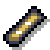 | Atel | Bir atel (gövde plakası ve baz reaktifinden yapılır). Tut ve yaralı birinin yanında Tedavi et'e dokun: 4 saniyede 25 darbe hasarı alır (Doktor için yarısı) ve tükenir (acemi yalnızca yarısını iyileştirir). Bir prototip atel bükülebilir. | Robotik tezgâhı, Atel kafesi projesi serbest bırakılınca |
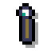 | Kültür çubuğu | Bir kültür çubuğu (tuz reaktifi ve baz reaktifinden yapılır). Birini taşıyan bir cerrah onu bir sonraki ameliyatta kullanır: hastanın enfeksiyon riski yarıya iner. Bir prototip çubuk bozulabilir. | Robotik tezgâhı, Kültür çubuğu projesi serbest bırakılınca |
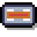 | Isıtma battaniyesi | Kırmızı ısıtma şeritli gümüş folyo bir battaniye; Cairn İstasyonu'nda Koğuş'un ve Isıtma Odası'nın raflarından. Tut ve üşümüş bir hastanın (ya da kendinin) yanında Sar'a dokun: 5 saniyelik iş, sonra hasta 3 dakika sarılı kalır; bu iç ısıyı yavaşça yükseltir ve Üşümeyi alır. Doktor ya da ilk yardım kitabını okumuş biri sıcaklığın tamamını verir; başkası yüzde 50'ini verir. Tek kullanımlık. | Cairn İstasyonu'nda Koğuş'un ve Isıtma Odası'nın rafları |
| Serum torbası | Damlalık hattında bir torba ılık serum; Isıtma Odası'nın serum sehpasından. Donma ameliyatının serumudur: aktif elinde ameliyat çantası olan ve yanında bir torba taşıyan Doktor, küvette, yatakta ya da ameliyat masasında yatan bir hastanın yanında Ameliyat et'e dokunur ve Donmayı tedavi et'i seçer (20 saniye). Torba biter. | Cairn İstasyonu'nda Isıtma Odası'nın serum sehpası |
Yiyecek, içecek ve bitkiler
| Eşya | Ne yapar | Nereden alınır | |
|---|---|---|---|
| Buğday tohumu | Serada bir dikim tepsisine dik: tut, boş bir tepsinin yanında dur ve Ek'e dokun (2 saniye). Buğday ekmek için tahıldır: 150 saniyelik bakımdan sonra olgunlaşır, dakikada yaklaşık 20 su içer ve 12 besin yer ve iyi bir hasat 2 ürün ve tohumu geri verir, böylece sera asla tükenmez. Botanikçi'nin tohum kesesi birini tutar. Cebe sığacak kadar küçük. Ambar bir tohumu 2 tedarik puanına satar. | Botanik (2), Botanikçi kiti, talep konsolu siparişi (2 puan) | |
| Domates tohumu | Serada bir dikim tepsisine dik: tut, boş bir tepsinin yanında dur ve Ek'e dokun (2 saniye). Domates kırmızı ve sulu: 3 dakikalık bakımdan sonra olgunlaşır, dakikada yaklaşık 24 su içer ve 16 besin yer ve iyi bir hasat 2 ürün ve tohumu geri verir, böylece sera asla tükenmez. Botanikçi'nin tohum kesesi birini tutar. Cebe sığacak kadar küçük. Ambar bir tohumu 2 tedarik puanına satar. | Botanik (2), Botanikçi kiti, talep konsolu siparişi (2 puan) | |
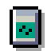 | Fasulye tohumu | Serada bir dikim tepsisine dik: tut, boş bir tepsinin yanında dur ve Ek'e dokun (2 saniye). Fasulye kendi besinini kendisi sağlar: 210 saniyelik bakımdan sonra olgunlaşır, dakikada yaklaşık 14 su içer ve 6 besin yer ve iyi bir hasat 2 ürün ve tohumu geri verir, böylece sera asla tükenmez. Botanikçi'nin tohum kesesi birini tutar. Cebe sığacak kadar küçük. Ambar bir tohumu 2 tedarik puanına satar. | Botanik (2), Botanikçi kiti, talep konsolu siparişi (2 puan) |
| Buğday | Seradan ürün: Şef için mutfağa açılan dolaba koy ya da pişirmek için bir ocağa koy. Pideye (2 buğday) ve malt çayına (buğday) girer. | in a dolap, yer: Mutfak (2) | |
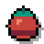 | Domates | Seradan ürün: Şef için mutfağa açılan dolaba koy ya da pişirmek için bir ocağa koy. Domatesli pilava (pirinç ve domates), fasulye güvecine (fasulye ve domates), domates çorbasına (2 domates) ve domates köpüğüne (domates) girer. | in a dolap, yer: Mutfak |
| Fasulye | Seradan ürün: Şef için mutfağa açılan dolaba koy ya da pişirmek için bir ocağa koy. Protein tavasına (protein bloğu ve fasulye), pirinç kasesine (pirinç ve fasulye) ve fasulye güvecine (fasulye ve domates) girer. | in a dolap, yer: Mutfak | |
| Protein bloğu | Tedarik konsolunda Ambar'dan sipariş edilir (4 tedarik puanı). Bir ocakta fasulyeyle pişirilirse protein tavası olur; patates ve soğanla hasat karışımı, mutfağın en büyük yemeği. | in a dolap, yer: Mutfak, talep konsolu siparişi (4 puan) | |
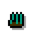 | Genç buğday | Bir tepside büyüyen genç bir bitki. Suyu varsa bir süre sonra olgunlaşır; kimse onu almaz. | — |
| Genç domates fidesi | Bir tepside büyüyen genç bir bitki. Suyu varsa bir süre sonra olgunlaşır; kimse onu almaz. | — | |
| Genç fasulye fidesi | Bir tepside büyüyen genç bir bitki. Suyu varsa bir süre sonra olgunlaşır; kimse onu almaz. | — | |
| Olgun buğday | Tepsideki olgun bir bitki: yanında dur ve Hasat'a dokun (3 saniye), 2 ürün (ihmal edildiyse yarısı) ve tohum geri. | — | |
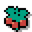 | Olgun domates bitkisi | Tepsideki olgun bir bitki: yanında dur ve Hasat'a dokun (3 saniye), 2 ürün (ihmal edildiyse yarısı) ve tohum geri. | — |
| Olgun fasulye bitkisi | Tepsideki olgun bir bitki: yanında dur ve Hasat'a dokun (3 saniye), 2 ürün (ihmal edildiyse yarısı) ve tohum geri. | — | |
| Yassı ekmek | Mutfaktan bir yemek. Tut ve Ye'ye dokun (3 saniye): açlık göstergesine yüzde 30 ekler. Bozulmaz. Ocakta 2 buğdaydan yapılır. | — | |
| Domates çorbası | Mutfaktan bir yemek. Tut ve Ye'ye dokun (3 saniye): açlık göstergesine yüzde 33 ekler. Bozulmaz. Ocakta 2 domatesten yapılır. | — | |
| Fasulye yahnisi | Mutfaktan bir yemek. Tut ve Ye'ye dokun (3 saniye): açlık göstergesine yüzde 42 ekler. Bozulmaz. Ocakta fasulye ve domatesten yapılır. | — | |
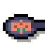 | Proteinli tava yemeği | Mutfaktan bir yemek. Tut ve Ye'ye dokun (3 saniye): açlık göstergesine yüzde 60 ekler. Bozulmaz. Ocakta protein bloğu ve fasulyeden yapılır. | — |
| Rasyon paketi | Dağıtıcıdan bir rasyon paketi (herkese her 90 saniyede bir). Tut ve Ye'ye dokun (3 saniye): açlık göstergesine yüzde 35 ekler, pişmiş bir yemekten az. Cebe sığacak kadar küçük. | — | |
| Domates gazozu | Barın bir içeceği. Barın karıştırıcısında temiz bir bardağa karıştırılır: domates. Tut ve İç'e dokun (3 saniye): açlık göstergesine yüzde 6 ekler ve kirli bardak elinde kalır. Hafif bir içecek: kimseyi çakırkeyif yapmaz. | barda yapılır (bkz. Barmen'in içecek listesi) | |
| Malt çayı | Barın bir içeceği. Barın karıştırıcısında temiz bir bardağa karıştırılır: buğday. Tut ve İç'e dokun (3 saniye): açlık göstergesine yüzde 5 ekler ve kirli bardak elinde kalır. Hafif bir içecek; seni 1 dakika boyunca rahatlatır. Cairn İstasyonu'nda Üşümeyi 20 azaltır ve gövdeyi ısıtır. | barda yapılır (bkz. Barmen'in içecek listesi) | |
| Bahçe meyve suyu | Bar şişesi: 6 ölçü kaldı (toplam 6). Boş bardağa doldurulunca olan: Bahçe Bardağı. Shaker onu şunlar için kullanır: Güneş Spritz, Hava Kilidi Ekşisi, Atmosfere Dönüş, Sakin Vardiya. Boşalan şişe yok olur; Ambar dolusunu 2 tedarik puanına satar. | Bar (2), talep konsolu siparişi (2 puan) | |
| Tatlı şurup | Bar şişesi: 6 ölçü kaldı (toplam 6). Shaker onu şunlar için kullanır: Bulutsu Gazozu, Basınç Sırtı, Dip Işıltısı, Sakin Vardiya. Boşalan şişe yok olur; Ambar dolusunu 2 tedarik puanına satar. | Bar (2), talep konsolu siparişi (2 puan) | |
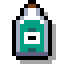 | Kehribar maya | Bar şişesi: 6 ölçü kaldı (toplam 6). Shaker onu şunlar için kullanır: Güneş Spritz, Bulutsu Gazozu, Kuru Havuz. Boşalan şişe yok olur; Ambar dolusunu 2 tedarik puanına satar. | Bar, talep konsolu siparişi (2 puan) |
| Bitter | Bar şişesi: 6 ölçü kaldı (toplam 6). Shaker onu şunlar için kullanır: Hava Kilidi Ekşisi, Kuru Havuz, Atmosfere Dönüş, Dip Işıltısı. Boşalan şişe yok olur; Ambar dolusunu 2 tedarik puanına satar. | Bar, talep konsolu siparişi (2 puan) | |
| Güneş Spritz | Barın bir içeceği. Boş bir bardağa çalkalanır: bahçe meyve suyu ve kehribar maya. Tut ve İç'e dokun (3 saniye): açlık göstergesine yüzde 7 ekler ve kirli bardak elinde kalır. Sert bir içecek: 3 tanesi 4 dakika içinde seni çakırkeyif yapar (bkz. Hizmet işleri): hafif, kısa bir yalpalama, zararsız. | barda yapılır (bkz. Barmen'in içecek listesi) | |
| Bulutsu Gazozu | Barın bir içeceği. Boş bir bardağa çalkalanır: kehribar maya ve tatlı şurup. Tut ve İç'e dokun (3 saniye): açlık göstergesine yüzde 7 ekler ve kirli bardak elinde kalır. Sert bir içecek: 3 tanesi 4 dakika içinde seni çakırkeyif yapar (bkz. Hizmet işleri): hafif, kısa bir yalpalama, zararsız. | barda yapılır (bkz. Barmen'in içecek listesi) | |
| Hava Kilidi Ekşisi | Barın bir içeceği. Boş bir bardağa çalkalanır: bahçe meyve suyu ve bitter. Tut ve İç'e dokun (3 saniye): açlık göstergesine yüzde 6 ekler ve kirli bardak elinde kalır. Sert bir içecek: 3 tanesi 4 dakika içinde seni çakırkeyif yapar (bkz. Hizmet işleri): hafif, kısa bir yalpalama, zararsız. | barda yapılır (bkz. Barmen'in içecek listesi) | |
| Kuru Havuz | Barın bir içeceği. Boş bir bardağa çalkalanır: kehribar maya ve bitter. Tut ve İç'e dokun (3 saniye): açlık göstergesine yüzde 6 ekler ve kirli bardak elinde kalır. Sert bir içecek: 3 tanesi 4 dakika içinde seni çakırkeyif yapar (bkz. Hizmet işleri): hafif, kısa bir yalpalama, zararsız. | barda yapılır (bkz. Barmen'in içecek listesi) | |
| Patates tohumu | Serada bir dikim tepsisine dik: tut, boş bir tepsinin yanında dur ve Ek'e dokun (2 saniye). Patates istasyonun temel gıdasıdır: 3 dakikalık bakımdan sonra olgunlaşır, dakikada yaklaşık 16 su içer ve 16 besin yer ve iyi bir hasat 3 ürün ve tohumu geri verir, böylece sera asla tükenmez. Botanikçi'nin tohum kesesi birini tutar. Cebe sığacak kadar küçük. Ambar bir tohumu 2 tedarik puanına satar. | Botanik (2), Botanikçi kiti, talep konsolu siparişi (2 puan) | |
| Pirinç tohumu | Serada bir dikim tepsisine dik: tut, boş bir tepsinin yanında dur ve Ek'e dokun (2 saniye). Pirinç susuzdur, ıslak büyür: 4 dakikalık bakımdan sonra olgunlaşır, dakikada yaklaşık 30 su içer ve 14 besin yer ve iyi bir hasat 2 ürün ve tohumu geri verir, böylece sera asla tükenmez. Botanikçi'nin tohum kesesi birini tutar. Cebe sığacak kadar küçük. Ambar bir tohumu 2 tedarik puanına satar. | Botanik (2), Botanikçi kiti, talep konsolu siparişi (2 puan) | |
| Mısır tohumu | Serada bir dikim tepsisine dik: tut, boş bir tepsinin yanında dur ve Ek'e dokun (2 saniye). Mısır besine açtır: 270 saniyelik bakımdan sonra olgunlaşır, dakikada yaklaşık 20 su içer ve 22 besin yer ve iyi bir hasat 2 ürün ve tohumu geri verir, böylece sera asla tükenmez. Botanikçi'nin tohum kesesi birini tutar. Cebe sığacak kadar küçük. Ambar bir tohumu 2 tedarik puanına satar. | Botanik (2), Botanikçi kiti, talep konsolu siparişi (2 puan) | |
| Havuç tohumu | Serada bir dikim tepsisine dik: tut, boş bir tepsinin yanında dur ve Ek'e dokun (2 saniye). Havuç hızlı ve cömerttir: 150 saniyelik bakımdan sonra olgunlaşır, dakikada yaklaşık 14 su içer ve 10 besin yer ve iyi bir hasat 3 ürün ve tohumu geri verir, böylece sera asla tükenmez. Botanikçi'nin tohum kesesi birini tutar. Cebe sığacak kadar küçük. Ambar bir tohumu 2 tedarik puanına satar. | Botanik (2), Botanikçi kiti, talep konsolu siparişi (2 puan) | |
| Soğan tohumu | Serada bir dikim tepsisine dik: tut, boş bir tepsinin yanında dur ve Ek'e dokun (2 saniye). Soğan et suyuna ve güveçlere tat verir: 3 dakikalık bakımdan sonra olgunlaşır, dakikada yaklaşık 12 su içer ve 10 besin yer ve iyi bir hasat 2 ürün ve tohumu geri verir, böylece sera asla tükenmez. Botanikçi'nin tohum kesesi birini tutar. Cebe sığacak kadar küçük. Ambar bir tohumu 2 tedarik puanına satar. | Botanik (2), Botanikçi kiti, talep konsolu siparişi (2 puan) | |
| Elma çekirdeği | Serada bir dikim tepsisine dik: tut, boş bir tepsinin yanında dur ve Ek'e dokun (2 saniye). Elma ağaç gibi bir üründür, yavaş ama cömert: 6 dakikalık bakımdan sonra olgunlaşır, dakikada yaklaşık 10 su içer ve 14 besin yer ve iyi bir hasat 3 ürün ve tohumu geri verir, böylece sera asla tükenmez. Tohumlar sera raflarında durur. Cebe sığacak kadar küçük. Ambar bir tohumu 2 tedarik puanına satar. | Botanik (2), talep konsolu siparişi (2 puan) | |
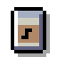 | Mantar sporu | Serada bir dikim tepsisine dik: tut, boş bir tepsinin yanında dur ve Ek'e dokun (2 saniye). Mantar hızlı ve küçüktür: 2 dakikalık bakımdan sonra olgunlaşır, dakikada yaklaşık 12 su içer ve 8 besin yer ve iyi bir hasat 1 ürün ve tohumu geri verir, böylece sera asla tükenmez. Tohumlar sera raflarında durur. Cebe sığacak kadar küçük. Ambar bir tohumu 2 tedarik puanına satar. | Botanik (2), talep konsolu siparişi (2 puan) |
| Pancar tohumu | Serada bir dikim tepsisine dik: tut, boş bir tepsinin yanında dur ve Ek'e dokun (2 saniye). Şeker pancarı mutfak ve bar için şekerdir: 4 dakikalık bakımdan sonra olgunlaşır, dakikada yaklaşık 14 su içer ve 12 besin yer ve iyi bir hasat 2 ürün ve tohumu geri verir, böylece sera asla tükenmez. Tohumlar sera raflarında durur. Cebe sığacak kadar küçük. Ambar bir tohumu 2 tedarik puanına satar. | Botanik (2), talep konsolu siparişi (2 puan) | |
| Patates | Seradan ürün: Şef için mutfağa açılan dolaba koy ya da pişirmek için bir ocağa koy. Hasat karışımına (protein bloğu, patates ve soğan), sebze güvecine (havuç, patates ve soğan), mısır çorbasına (mısır koçanı, patates ve soğan), patates çorbasına (patates ve soğan), patates kızartmasına (2 patates) ve fırın patatesine (patates) girer. | in a dolap, yer: Mutfak | |
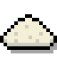 | Pirinç | Seradan ürün: Şef için mutfağa açılan dolaba koy ya da pişirmek için bir ocağa koy. Domatesli pilava (pirinç ve domates) ve pirinç kasesine (pirinç ve fasulye) girer. | — |
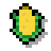 | Mısır koçanı | Seradan ürün: Şef için mutfağa açılan dolaba koy ya da pişirmek için bir ocağa koy. Mısır çorbasına girer (mısır koçanları, patates ve soğan). | — |
| Havuç | Seradan ürün: Şef için mutfağa açılan dolaba koy ya da pişirmek için bir ocağa koy. Sebze güvecine (havuç, patates ve soğan) ve havuç salatasına (2 havuç) girer. | — | |
| Soğan | Seradan ürün: Şef için mutfağa açılan dolaba koy ya da pişirmek için bir ocağa koy. Hasat karışımına (protein bloğu, patates ve soğan), sebze güvecine (havuç, patates ve soğan), mısır çorbasına (mısır koçanı, patates ve soğan), mantar tavasına (mantar ve soğan), patates çorbasına (patates ve soğan) ve soğan suyuna (2 soğan) girer. | in a dolap, yer: Mutfak | |
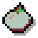 | Elma | Seradan ürün: Şef için mutfağa açılan dolaba koy ya da pişirmek için bir ocağa koy. Meyve komposuna girer (elmalar ve pancar şekeri). | — |
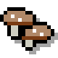 | Mantar | Seradan ürün: Şef için mutfağa açılan dolaba koy ya da pişirmek için bir ocağa koy. Mantar tavasına girer (mantar ve soğan). | — |
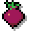 | Şeker pancarı | Seradan ürün: Şef için mutfağa açılan dolaba koy ya da pişirmek için bir ocağa koy. Şeker pancarı şekerine girer (şeker pancarları). Karıştırıcı onu şekere çevirir. | — |
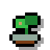 | Genç patates fidesi | Bir tepside büyüyen genç bir bitki. Suyu varsa bir süre sonra olgunlaşır; kimse onu almaz. | — |
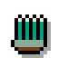 | Genç pirinç | Bir tepside büyüyen genç bir bitki. Suyu varsa bir süre sonra olgunlaşır; kimse onu almaz. | — |
| Genç mısır | Bir tepside büyüyen genç bir bitki. Suyu varsa bir süre sonra olgunlaşır; kimse onu almaz. | — | |
| Genç havuç | Bir tepside büyüyen genç bir bitki. Suyu varsa bir süre sonra olgunlaşır; kimse onu almaz. | — | |
| Genç soğan | Bir tepside büyüyen genç bir bitki. Suyu varsa bir süre sonra olgunlaşır; kimse onu almaz. | — | |
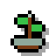 | Genç elma ağacı | Bir tepside büyüyen genç bir bitki. Suyu varsa bir süre sonra olgunlaşır; kimse onu almaz. | — |
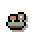 | Genç mantar | Bir tepside büyüyen genç bir bitki. Suyu varsa bir süre sonra olgunlaşır; kimse onu almaz. | — |
| Genç pancar | Bir tepside büyüyen genç bir bitki. Suyu varsa bir süre sonra olgunlaşır; kimse onu almaz. | — | |
| Olgun patates bitkisi | Tepsideki olgun bir bitki: yanında dur ve Hasat'a dokun (3 saniye), 3 ürün (ihmal edildiyse yarısı) ve tohum geri. | — | |
| Olgun pirinç | Tepsideki olgun bir bitki: yanında dur ve Hasat'a dokun (3 saniye), 2 ürün (ihmal edildiyse yarısı) ve tohum geri. | — | |
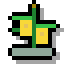 | Olgun mısır | Tepsideki olgun bir bitki: yanında dur ve Hasat'a dokun (3 saniye), 2 ürün (ihmal edildiyse yarısı) ve tohum geri. | — |
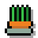 | Olgun havuç | Tepsideki olgun bir bitki: yanında dur ve Hasat'a dokun (3 saniye), 3 ürün (ihmal edildiyse yarısı) ve tohum geri. | — |
| Olgun soğan | Tepsideki olgun bir bitki: yanında dur ve Hasat'a dokun (3 saniye), 2 ürün (ihmal edildiyse yarısı) ve tohum geri. | — | |
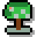 | Olgun elma ağacı | Tepsideki olgun bir bitki: yanında dur ve Hasat'a dokun (3 saniye), 3 ürün (ihmal edildiyse yarısı) ve tohum geri. | — |
| Olgun mantar | Tepsideki olgun bir bitki: yanında dur ve Hasat'a dokun (3 saniye), 1 ürün (ihmal edildiyse yarısı) ve tohum geri. | — | |
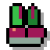 | Olgun pancar | Tepsideki olgun bir bitki: yanında dur ve Hasat'a dokun (3 saniye), 2 ürün (ihmal edildiyse yarısı) ve tohum geri. | — |
| Pancar şekeri | Şeker pancarından şeker, barın karıştırıcısında yapılır (3 saniye). Bir malzemedir: meyve kompostosu ve kutup istasyonunun karıştırıcıdaki sıcak içecekleri ister. | — | |
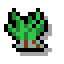 | Yabani otlar | Bir tepsiden yolunan otlar (tut ve kompost kutusunda Otları kompostla'ya dokun: her 6 tanesi bir gübre kullanımı yapar). Kimse onları yemez. | — |
| Patates kızartması | Mutfaktan bir yemek. Tut ve Ye'ye dokun (3 saniye): açlık göstergesine yüzde 38 ekler. Bozulmaz. Ocakta 2 patatesten yapılır. | — | |
| Fırın patates | Mutfaktan bir yemek. Tut ve Ye'ye dokun (3 saniye): açlık göstergesine yüzde 28 ekler. Bozulmaz. Ocakta patatesten yapılır. | — | |
| Patates çorbası | Mutfaktan bir yemek. Tut ve Ye'ye dokun (3 saniye): açlık göstergesine yüzde 40 ekler. Bozulmaz. Ocakta patates ve soğandan yapılır. | — | |
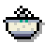 | Pilav kasesi | Mutfaktan bir yemek. Tut ve Ye'ye dokun (3 saniye): açlık göstergesine yüzde 45 ekler. Bozulmaz. Ocakta pirinç ve fasulyeden yapılır. | — |
| Mısır çorbası | Mutfaktan bir yemek. Tut ve Ye'ye dokun (3 saniye): açlık göstergesine yüzde 56 ekler. Bozulmaz. Ocakta mısır koçanı, patates ve soğandan yapılır. | — | |
| Sebze yahnisi | Mutfaktan bir yemek. Tut ve Ye'ye dokun (3 saniye): açlık göstergesine yüzde 52 ekler. Bozulmaz. Ocakta havuç, patates ve soğandan yapılır. | — | |
| Havuç salatası | Mutfaktan bir yemek. Tut ve Ye'ye dokun (3 saniye): açlık göstergesine yüzde 25 ekler. Bozulmaz. Ocakta 2 havuçtan yapılır. | — | |
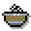 | Soğan çorbası | Mutfaktan bir yemek. Tut ve Ye'ye dokun (3 saniye): açlık göstergesine yüzde 26 ekler. Bozulmaz. Ocakta 2 soğandan yapılır. | — |
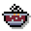 | Meyve kompostosu | Mutfaktan bir yemek. Tut ve Ye'ye dokun (3 saniye): açlık göstergesine yüzde 34 ekler. Bozulmaz. Ocakta elma ve pancar şekerinden yapılır. | — |
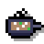 | Mantar sote | Mutfaktan bir yemek. Tut ve Ye'ye dokun (3 saniye): açlık göstergesine yüzde 38 ekler. Bozulmaz. Ocakta mantar ve soğandan yapılır. | — |
| Domatesli pilav | Mutfaktan bir yemek. Tut ve Ye'ye dokun (3 saniye): açlık göstergesine yüzde 47 ekler. Bozulmaz. Ocakta pirinç ve domatesten yapılır. | — | |
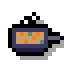 | Hasat karışımı | Mutfaktan bir yemek. Tut ve Ye'ye dokun (3 saniye): açlık göstergesine yüzde 65 ekler. Bozulmaz. Ocakta protein bloğu, patates ve soğandan yapılır. | — |
| Donmuş erzak | Donmuş bir erzak bloğu; Cairn İstasyonu'nda soğuk zincirin stoku. Çevresindeki hava 2 C'nin altında kaldıkça saklanır (Soğuk Kiler ve Soğuk Depo, açık buz, yalıtımlı bir sandık); sıcak bir odada 2 dakika sonra çözülür ve çözülmüş erzak 4 dakika daha sonra bozulur. Yanında taşırken cebinde, masadaki gibi çözülür. Şef ondan bir patates ve bir soğanla Erzak yahnisi yapar: mutfağın pişirdiği en iyi sıcak yemek. | talep konsolu siparişi (5 puan), Cairn İstasyonu'ndaki Soğuk Depo, talep konsolu (5 puan, yalıtımlı bir sandıkta) ve ikmal uçuşları | |
| Çözülmüş erzak | Çözülmüş, gri-kahverengi ve damlayan bir erzak bloğu. Bir daha donmaz. Şef yine de ondan bir patates ve bir soğanla sulu bir yahni yapabilir; sıcak bir odada bırakılırsa 4 dakika sonra bozulur. Soğuk bir oda onu bozmaz, yalnızca saati durdurur. | sıcak bir odada fazla kalmış donmuş erzak | |
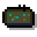 | Bozulmuş erzak | Fazla uzun süre sıcakta kalmış erzak: yeşil, koyu ve kimseye yaramaz. Onları bir atık kutusuna at. | sıcak bir odada fazla kalmış çözülmüş erzak |
| Erzak yahnisi | Taze (donmuş) erzaktan, bir patates ve bir soğandan yapılmış bir kase erzak yahnisi: açlık göstergesinin yüzde 64'sini doldurur ve Cairn İstasyonu'ndaki en iyi sıcak yemektir. Üşümeden 45 düşürür ve iç ısıyı 150 saniye daha hızlı ısıtır. | Cairn İstasyonu'nda Şef'in ocağı: donmuş erzak, bir patates ve bir soğan | |
| Sulu yahni | Çözülmüş erzaktan, bir patates ve bir soğandan yapılmış sulu bir yahni: açlık göstergesinin yüzde 38'sini doldurur ve erzak yahnisinden az ısıtır (Üşümeden 25 düşürür, iç ısı 90 saniye daha hızlı ısınır). | Cairn İstasyonu'nda Şef'in ocağı: çözülmüş erzak, bir patates ve bir soğan | |
| Ocak fincanı | Barın bir içeceği. Cairn İstasyonu'nda barın karıştırıcısında temiz bir bardağa karıştırılır: malt çayı ve pancar şekeri. Tut ve İç'e dokun (3 saniye): açlık göstergesine yüzde 7 ekler ve kirli bardak elinde kalır. Sert bir içecek: 3 tanesi 4 dakika içinde seni çakırkeyif yapar (bkz. Hizmet işleri): hafif, kısa bir yalpalama, zararsız. Cairn İstasyonu'nda Üşümeyi 30 azaltır ve gövdeyi ısıtır. | Cairn İstasyonu'ndaki barın karıştırıcısı: bir malt çayı ve pancar şekeri | |
| Ilık şurup | Barın bir içeceği. Cairn İstasyonu'nda barın karıştırıcısında temiz bir bardağa karıştırılır: elma ve pancar şekeri. Tut ve İç'e dokun (3 saniye): açlık göstergesine yüzde 6 ekler ve kirli bardak elinde kalır. Hafif bir içecek; seni 1 dakika boyunca rahatlatır. Cairn İstasyonu'nda Üşümeyi 25 azaltır ve gövdeyi ısıtır. | Cairn İstasyonu'ndaki barın karıştırıcısı: bir elma ve pancar şekeri | |
| Bardak | Barın bardak rafından temiz bir bardak. Öbür elindeki şişeyle (Doldur), barın musluğunda (Musluktan doldur), shaker ile (Çalkala) ya da karıştırıcıda doldur. Buz ekle önce içine buz koyar. | Bar (12) | |
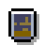 | Kirli bardak | Kullanılmış bir bardak. Bir lavaboda yıka (Bardağı yıka, 2 saniye, Barmen için yarısı), sonra bardak rafına geri koy. İçilen ya da dökülen her içecek geriye bir tane bırakır. | içilen ya da dökülen bir içecek |
| Buzlu bardak | İçinde buz olan temiz bir bardak. Buzlu içecek için üstüne şişeden doldur ya da içine içecek çalkala veya karıştır. | barda boş bardağa eklenen buz | |
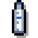 | Yörünge beyazı | Bar şişesi: 6 ölçü kaldı (toplam 6). Boş bardağa doldurulunca olan: Sıfır Noktası. Shaker onu şunlar için kullanır: Atmosfere Dönüş, Basınç Sırtı. Boşalan şişe yok olur; Ambar dolusunu 3 tedarik puanına satar. | Bar (2), talep konsolu siparişi (3 puan) |
| Çukur karası | Bar şişesi: 6 ölçü kaldı (toplam 6). Boş bardağa doldurulunca olan: Derin Ölçü. Shaker onu şunlar için kullanır: Dip Işıltısı. Boşalan şişe yok olur; Ambar dolusunu 3 tedarik puanına satar. | Bar (2), talep konsolu siparişi (3 puan) | |
| Tuzlu tonik | Bar şişesi: 6 ölçü kaldı (toplam 6). Sıfır Noktası üstüne doldurulunca olan: Uzun Yörünge. Shaker onu şunlar için kullanır: Basınç Sırtı. Boşalan şişe yok olur; Ambar dolusunu 2 tedarik puanına satar. | Bar (2), talep konsolu siparişi (2 puan) | |
| Basınçlı soda | Bar şişesi: 6 ölçü kaldı (toplam 6). Derin Ölçü üstüne doldurulunca olan: Kara Akıntı. Bahçe Bardağı üstüne doldurulunca olan: Sera Serinliği. Shaker onu şunlar için kullanır: Sakin Vardiya. Boşalan şişe yok olur; Ambar dolusunu 2 tedarik puanına satar. | Bar (2), talep konsolu siparişi (2 puan) | |
| Bahçe meyve suyu (5 ölçü) | Bar şişesi: 5 ölçü kaldı (toplam 6). Boş bardağa doldurulunca olan: Bahçe Bardağı. Shaker onu şunlar için kullanır: Güneş Spritz, Hava Kilidi Ekşisi, Atmosfere Dönüş, Sakin Vardiya. Boşalan şişe yok olur; Ambar dolusunu 2 tedarik puanına satar. | içinden doldurulan bir şişe | |
| Bahçe meyve suyu (4 ölçü) | Bar şişesi: 4 ölçü kaldı (toplam 6). Boş bardağa doldurulunca olan: Bahçe Bardağı. Shaker onu şunlar için kullanır: Güneş Spritz, Hava Kilidi Ekşisi, Atmosfere Dönüş, Sakin Vardiya. Boşalan şişe yok olur; Ambar dolusunu 2 tedarik puanına satar. | içinden doldurulan bir şişe | |
| Bahçe meyve suyu (3 ölçü) | Bar şişesi: 3 ölçü kaldı (toplam 6). Boş bardağa doldurulunca olan: Bahçe Bardağı. Shaker onu şunlar için kullanır: Güneş Spritz, Hava Kilidi Ekşisi, Atmosfere Dönüş, Sakin Vardiya. Boşalan şişe yok olur; Ambar dolusunu 2 tedarik puanına satar. | içinden doldurulan bir şişe | |
| Bahçe meyve suyu (2 ölçü) | Bar şişesi: 2 ölçü kaldı (toplam 6). Boş bardağa doldurulunca olan: Bahçe Bardağı. Shaker onu şunlar için kullanır: Güneş Spritz, Hava Kilidi Ekşisi, Atmosfere Dönüş, Sakin Vardiya. Boşalan şişe yok olur; Ambar dolusunu 2 tedarik puanına satar. | içinden doldurulan bir şişe | |
| Bahçe meyve suyu (1 ölçü) | Bar şişesi: 1 ölçü kaldı (toplam 6). Boş bardağa doldurulunca olan: Bahçe Bardağı. Shaker onu şunlar için kullanır: Güneş Spritz, Hava Kilidi Ekşisi, Atmosfere Dönüş, Sakin Vardiya. Boşalan şişe yok olur; Ambar dolusunu 2 tedarik puanına satar. | içinden doldurulan bir şişe | |
| Tatlı şurup (5 ölçü) | Bar şişesi: 5 ölçü kaldı (toplam 6). Shaker onu şunlar için kullanır: Bulutsu Gazozu, Basınç Sırtı, Dip Işıltısı, Sakin Vardiya. Boşalan şişe yok olur; Ambar dolusunu 2 tedarik puanına satar. | içinden doldurulan bir şişe | |
| Tatlı şurup (4 ölçü) | Bar şişesi: 4 ölçü kaldı (toplam 6). Shaker onu şunlar için kullanır: Bulutsu Gazozu, Basınç Sırtı, Dip Işıltısı, Sakin Vardiya. Boşalan şişe yok olur; Ambar dolusunu 2 tedarik puanına satar. | içinden doldurulan bir şişe | |
| Tatlı şurup (3 ölçü) | Bar şişesi: 3 ölçü kaldı (toplam 6). Shaker onu şunlar için kullanır: Bulutsu Gazozu, Basınç Sırtı, Dip Işıltısı, Sakin Vardiya. Boşalan şişe yok olur; Ambar dolusunu 2 tedarik puanına satar. | içinden doldurulan bir şişe | |
| Tatlı şurup (2 ölçü) | Bar şişesi: 2 ölçü kaldı (toplam 6). Shaker onu şunlar için kullanır: Bulutsu Gazozu, Basınç Sırtı, Dip Işıltısı, Sakin Vardiya. Boşalan şişe yok olur; Ambar dolusunu 2 tedarik puanına satar. | içinden doldurulan bir şişe | |
| Tatlı şurup (1 ölçü) | Bar şişesi: 1 ölçü kaldı (toplam 6). Shaker onu şunlar için kullanır: Bulutsu Gazozu, Basınç Sırtı, Dip Işıltısı, Sakin Vardiya. Boşalan şişe yok olur; Ambar dolusunu 2 tedarik puanına satar. | içinden doldurulan bir şişe | |
| Kehribar maya (5 ölçü) | Bar şişesi: 5 ölçü kaldı (toplam 6). Shaker onu şunlar için kullanır: Güneş Spritz, Bulutsu Gazozu, Kuru Havuz. Boşalan şişe yok olur; Ambar dolusunu 2 tedarik puanına satar. | içinden doldurulan bir şişe | |
| Kehribar maya (4 ölçü) | Bar şişesi: 4 ölçü kaldı (toplam 6). Shaker onu şunlar için kullanır: Güneş Spritz, Bulutsu Gazozu, Kuru Havuz. Boşalan şişe yok olur; Ambar dolusunu 2 tedarik puanına satar. | içinden doldurulan bir şişe | |
| Kehribar maya (3 ölçü) | Bar şişesi: 3 ölçü kaldı (toplam 6). Shaker onu şunlar için kullanır: Güneş Spritz, Bulutsu Gazozu, Kuru Havuz. Boşalan şişe yok olur; Ambar dolusunu 2 tedarik puanına satar. | içinden doldurulan bir şişe | |
| Kehribar maya (2 ölçü) | Bar şişesi: 2 ölçü kaldı (toplam 6). Shaker onu şunlar için kullanır: Güneş Spritz, Bulutsu Gazozu, Kuru Havuz. Boşalan şişe yok olur; Ambar dolusunu 2 tedarik puanına satar. | içinden doldurulan bir şişe | |
| Kehribar maya (1 ölçü) | Bar şişesi: 1 ölçü kaldı (toplam 6). Shaker onu şunlar için kullanır: Güneş Spritz, Bulutsu Gazozu, Kuru Havuz. Boşalan şişe yok olur; Ambar dolusunu 2 tedarik puanına satar. | içinden doldurulan bir şişe | |
| Bitter (5 ölçü) | Bar şişesi: 5 ölçü kaldı (toplam 6). Shaker onu şunlar için kullanır: Hava Kilidi Ekşisi, Kuru Havuz, Atmosfere Dönüş, Dip Işıltısı. Boşalan şişe yok olur; Ambar dolusunu 2 tedarik puanına satar. | içinden doldurulan bir şişe | |
| Bitter (4 ölçü) | Bar şişesi: 4 ölçü kaldı (toplam 6). Shaker onu şunlar için kullanır: Hava Kilidi Ekşisi, Kuru Havuz, Atmosfere Dönüş, Dip Işıltısı. Boşalan şişe yok olur; Ambar dolusunu 2 tedarik puanına satar. | içinden doldurulan bir şişe | |
| Bitter (3 ölçü) | Bar şişesi: 3 ölçü kaldı (toplam 6). Shaker onu şunlar için kullanır: Hava Kilidi Ekşisi, Kuru Havuz, Atmosfere Dönüş, Dip Işıltısı. Boşalan şişe yok olur; Ambar dolusunu 2 tedarik puanına satar. | içinden doldurulan bir şişe | |
| Bitter (2 ölçü) | Bar şişesi: 2 ölçü kaldı (toplam 6). Shaker onu şunlar için kullanır: Hava Kilidi Ekşisi, Kuru Havuz, Atmosfere Dönüş, Dip Işıltısı. Boşalan şişe yok olur; Ambar dolusunu 2 tedarik puanına satar. | içinden doldurulan bir şişe | |
| Bitter (1 ölçü) | Bar şişesi: 1 ölçü kaldı (toplam 6). Shaker onu şunlar için kullanır: Hava Kilidi Ekşisi, Kuru Havuz, Atmosfere Dönüş, Dip Işıltısı. Boşalan şişe yok olur; Ambar dolusunu 2 tedarik puanına satar. | içinden doldurulan bir şişe | |
| Yörünge beyazı (5 ölçü) | Bar şişesi: 5 ölçü kaldı (toplam 6). Boş bardağa doldurulunca olan: Sıfır Noktası. Shaker onu şunlar için kullanır: Atmosfere Dönüş, Basınç Sırtı. Boşalan şişe yok olur; Ambar dolusunu 3 tedarik puanına satar. | içinden doldurulan bir şişe | |
| Yörünge beyazı (4 ölçü) | Bar şişesi: 4 ölçü kaldı (toplam 6). Boş bardağa doldurulunca olan: Sıfır Noktası. Shaker onu şunlar için kullanır: Atmosfere Dönüş, Basınç Sırtı. Boşalan şişe yok olur; Ambar dolusunu 3 tedarik puanına satar. | içinden doldurulan bir şişe | |
| Yörünge beyazı (3 ölçü) | Bar şişesi: 3 ölçü kaldı (toplam 6). Boş bardağa doldurulunca olan: Sıfır Noktası. Shaker onu şunlar için kullanır: Atmosfere Dönüş, Basınç Sırtı. Boşalan şişe yok olur; Ambar dolusunu 3 tedarik puanına satar. | içinden doldurulan bir şişe | |
| Yörünge beyazı (2 ölçü) | Bar şişesi: 2 ölçü kaldı (toplam 6). Boş bardağa doldurulunca olan: Sıfır Noktası. Shaker onu şunlar için kullanır: Atmosfere Dönüş, Basınç Sırtı. Boşalan şişe yok olur; Ambar dolusunu 3 tedarik puanına satar. | içinden doldurulan bir şişe | |
| Yörünge beyazı (1 ölçü) | Bar şişesi: 1 ölçü kaldı (toplam 6). Boş bardağa doldurulunca olan: Sıfır Noktası. Shaker onu şunlar için kullanır: Atmosfere Dönüş, Basınç Sırtı. Boşalan şişe yok olur; Ambar dolusunu 3 tedarik puanına satar. | içinden doldurulan bir şişe | |
| Çukur karası (5 ölçü) | Bar şişesi: 5 ölçü kaldı (toplam 6). Boş bardağa doldurulunca olan: Derin Ölçü. Shaker onu şunlar için kullanır: Dip Işıltısı. Boşalan şişe yok olur; Ambar dolusunu 3 tedarik puanına satar. | içinden doldurulan bir şişe | |
| Çukur karası (4 ölçü) | Bar şişesi: 4 ölçü kaldı (toplam 6). Boş bardağa doldurulunca olan: Derin Ölçü. Shaker onu şunlar için kullanır: Dip Işıltısı. Boşalan şişe yok olur; Ambar dolusunu 3 tedarik puanına satar. | içinden doldurulan bir şişe | |
| Çukur karası (3 ölçü) | Bar şişesi: 3 ölçü kaldı (toplam 6). Boş bardağa doldurulunca olan: Derin Ölçü. Shaker onu şunlar için kullanır: Dip Işıltısı. Boşalan şişe yok olur; Ambar dolusunu 3 tedarik puanına satar. | içinden doldurulan bir şişe | |
| Çukur karası (2 ölçü) | Bar şişesi: 2 ölçü kaldı (toplam 6). Boş bardağa doldurulunca olan: Derin Ölçü. Shaker onu şunlar için kullanır: Dip Işıltısı. Boşalan şişe yok olur; Ambar dolusunu 3 tedarik puanına satar. | içinden doldurulan bir şişe | |
| Çukur karası (1 ölçü) | Bar şişesi: 1 ölçü kaldı (toplam 6). Boş bardağa doldurulunca olan: Derin Ölçü. Shaker onu şunlar için kullanır: Dip Işıltısı. Boşalan şişe yok olur; Ambar dolusunu 3 tedarik puanına satar. | içinden doldurulan bir şişe | |
| Tuzlu tonik (5 ölçü) | Bar şişesi: 5 ölçü kaldı (toplam 6). Sıfır Noktası üstüne doldurulunca olan: Uzun Yörünge. Shaker onu şunlar için kullanır: Basınç Sırtı. Boşalan şişe yok olur; Ambar dolusunu 2 tedarik puanına satar. | içinden doldurulan bir şişe | |
| Tuzlu tonik (4 ölçü) | Bar şişesi: 4 ölçü kaldı (toplam 6). Sıfır Noktası üstüne doldurulunca olan: Uzun Yörünge. Shaker onu şunlar için kullanır: Basınç Sırtı. Boşalan şişe yok olur; Ambar dolusunu 2 tedarik puanına satar. | içinden doldurulan bir şişe | |
| Tuzlu tonik (3 ölçü) | Bar şişesi: 3 ölçü kaldı (toplam 6). Sıfır Noktası üstüne doldurulunca olan: Uzun Yörünge. Shaker onu şunlar için kullanır: Basınç Sırtı. Boşalan şişe yok olur; Ambar dolusunu 2 tedarik puanına satar. | içinden doldurulan bir şişe | |
| Tuzlu tonik (2 ölçü) | Bar şişesi: 2 ölçü kaldı (toplam 6). Sıfır Noktası üstüne doldurulunca olan: Uzun Yörünge. Shaker onu şunlar için kullanır: Basınç Sırtı. Boşalan şişe yok olur; Ambar dolusunu 2 tedarik puanına satar. | içinden doldurulan bir şişe | |
| Tuzlu tonik (1 ölçü) | Bar şişesi: 1 ölçü kaldı (toplam 6). Sıfır Noktası üstüne doldurulunca olan: Uzun Yörünge. Shaker onu şunlar için kullanır: Basınç Sırtı. Boşalan şişe yok olur; Ambar dolusunu 2 tedarik puanına satar. | içinden doldurulan bir şişe | |
| Basınçlı soda (5 ölçü) | Bar şişesi: 5 ölçü kaldı (toplam 6). Derin Ölçü üstüne doldurulunca olan: Kara Akıntı. Bahçe Bardağı üstüne doldurulunca olan: Sera Serinliği. Shaker onu şunlar için kullanır: Sakin Vardiya. Boşalan şişe yok olur; Ambar dolusunu 2 tedarik puanına satar. | içinden doldurulan bir şişe | |
| Basınçlı soda (4 ölçü) | Bar şişesi: 4 ölçü kaldı (toplam 6). Derin Ölçü üstüne doldurulunca olan: Kara Akıntı. Bahçe Bardağı üstüne doldurulunca olan: Sera Serinliği. Shaker onu şunlar için kullanır: Sakin Vardiya. Boşalan şişe yok olur; Ambar dolusunu 2 tedarik puanına satar. | içinden doldurulan bir şişe | |
| Basınçlı soda (3 ölçü) | Bar şişesi: 3 ölçü kaldı (toplam 6). Derin Ölçü üstüne doldurulunca olan: Kara Akıntı. Bahçe Bardağı üstüne doldurulunca olan: Sera Serinliği. Shaker onu şunlar için kullanır: Sakin Vardiya. Boşalan şişe yok olur; Ambar dolusunu 2 tedarik puanına satar. | içinden doldurulan bir şişe | |
| Basınçlı soda (2 ölçü) | Bar şişesi: 2 ölçü kaldı (toplam 6). Derin Ölçü üstüne doldurulunca olan: Kara Akıntı. Bahçe Bardağı üstüne doldurulunca olan: Sera Serinliği. Shaker onu şunlar için kullanır: Sakin Vardiya. Boşalan şişe yok olur; Ambar dolusunu 2 tedarik puanına satar. | içinden doldurulan bir şişe | |
| Basınçlı soda (1 ölçü) | Bar şişesi: 1 ölçü kaldı (toplam 6). Derin Ölçü üstüne doldurulunca olan: Kara Akıntı. Bahçe Bardağı üstüne doldurulunca olan: Sera Serinliği. Shaker onu şunlar için kullanır: Sakin Vardiya. Boşalan şişe yok olur; Ambar dolusunu 2 tedarik puanına satar. | içinden doldurulan bir şişe | |
| Buz kovası | Barın buz kovası: 6 kepçe buz kaldı (toplam 6). Bir elinde bardak varken Buz ekle'ye dokun; kova öbür elinde ya da erişimdeki bir rafta veya masada olsun. Barın karıştırıcısında doldur (Buz kovasını doldur, 8 saniye, Barmen için yarısı) ya da Cairn İstasyonu'nun avlusundan bir buz kalıbıyla hemen doldur. | Bar | |
| Buz kovası (5 kepçe) | Barın buz kovası: 5 kepçe buz kaldı (toplam 6). Bir elinde bardak varken Buz ekle'ye dokun; kova öbür elinde ya da erişimdeki bir rafta veya masada olsun. Barın karıştırıcısında doldur (Buz kovasını doldur, 8 saniye, Barmen için yarısı) ya da Cairn İstasyonu'nun avlusundan bir buz kalıbıyla hemen doldur. | içinden buz alınan bar buz kovası | |
| Buz kovası (4 kepçe) | Barın buz kovası: 4 kepçe buz kaldı (toplam 6). Bir elinde bardak varken Buz ekle'ye dokun; kova öbür elinde ya da erişimdeki bir rafta veya masada olsun. Barın karıştırıcısında doldur (Buz kovasını doldur, 8 saniye, Barmen için yarısı) ya da Cairn İstasyonu'nun avlusundan bir buz kalıbıyla hemen doldur. | içinden buz alınan bar buz kovası | |
| Buz kovası (3 kepçe) | Barın buz kovası: 3 kepçe buz kaldı (toplam 6). Bir elinde bardak varken Buz ekle'ye dokun; kova öbür elinde ya da erişimdeki bir rafta veya masada olsun. Barın karıştırıcısında doldur (Buz kovasını doldur, 8 saniye, Barmen için yarısı) ya da Cairn İstasyonu'nun avlusundan bir buz kalıbıyla hemen doldur. | içinden buz alınan bar buz kovası | |
| Buz kovası (2 kepçe) | Barın buz kovası: 2 kepçe buz kaldı (toplam 6). Bir elinde bardak varken Buz ekle'ye dokun; kova öbür elinde ya da erişimdeki bir rafta veya masada olsun. Barın karıştırıcısında doldur (Buz kovasını doldur, 8 saniye, Barmen için yarısı) ya da Cairn İstasyonu'nun avlusundan bir buz kalıbıyla hemen doldur. | içinden buz alınan bar buz kovası | |
| Buz kovası (1 kepçe) | Barın buz kovası: 1 kepçe buz kaldı (toplam 6). Bir elinde bardak varken Buz ekle'ye dokun; kova öbür elinde ya da erişimdeki bir rafta veya masada olsun. Barın karıştırıcısında doldur (Buz kovasını doldur, 8 saniye, Barmen için yarısı) ya da Cairn İstasyonu'nun avlusundan bir buz kalıbıyla hemen doldur. | içinden buz alınan bar buz kovası | |
| Buz kovası (boş) | Barın buz kovası: 0 kepçe buz kaldı (toplam 6). Bir elinde bardak varken Buz ekle'ye dokun; kova öbür elinde ya da erişimdeki bir rafta veya masada olsun. Barın karıştırıcısında doldur (Buz kovasını doldur, 8 saniye, Barmen için yarısı) ya da Cairn İstasyonu'nun avlusundan bir buz kalıbıyla hemen doldur. | içinden buz alınan bar buz kovası | |
| Omurga Köpüğü | Barın bir içeceği. Barın musluğundan boş bir bardağa doldurulur. Tut ve İç'e dokun (3 saniye): açlık göstergesine yüzde 8 ekler ve kirli bardak elinde kalır. Sert bir içecek: 3 tanesi 4 dakika içinde seni çakırkeyif yapar (bkz. Hizmet işleri): hafif, kısa bir yalpalama, zararsız. | barda yapılır (bkz. Barmen'in içecek listesi) | |
| Sıfır Noktası | Barın bir içeceği. Boş bir bardağa doldurulur: yörünge beyazı. Tut ve İç'e dokun (3 saniye): açlık göstergesine yüzde 4 ekler ve kirli bardak elinde kalır. Sert bir içecek: 3 tanesi 4 dakika içinde seni çakırkeyif yapar (bkz. Hizmet işleri): hafif, kısa bir yalpalama, zararsız. | barda yapılır (bkz. Barmen'in içecek listesi) | |
| Derin Ölçü | Barın bir içeceği. Boş bir bardağa doldurulur: çukur karası. Tut ve İç'e dokun (3 saniye): açlık göstergesine yüzde 4 ekler ve kirli bardak elinde kalır. Sert bir içecek: 3 tanesi 4 dakika içinde seni çakırkeyif yapar (bkz. Hizmet işleri): hafif, kısa bir yalpalama, zararsız. | barda yapılır (bkz. Barmen'in içecek listesi) | |
| Bahçe Bardağı | Barın bir içeceği. Boş bir bardağa doldurulur: bahçe meyve suyu. Tut ve İç'e dokun (3 saniye): açlık göstergesine yüzde 9 ekler ve kirli bardak elinde kalır. Hafif bir içecek: kimseyi çakırkeyif yapmaz. | barda yapılır (bkz. Barmen'in içecek listesi) | |
| Uzun Yörünge | Barın bir içeceği. Üstüne doldurulur: tuzlu tonik, alttaki Sıfır Noktası. Tut ve İç'e dokun (3 saniye): açlık göstergesine yüzde 6 ekler ve kirli bardak elinde kalır. Sert bir içecek: 3 tanesi 4 dakika içinde seni çakırkeyif yapar (bkz. Hizmet işleri): hafif, kısa bir yalpalama, zararsız. | barda yapılır (bkz. Barmen'in içecek listesi) | |
| Kara Akıntı | Barın bir içeceği. Üstüne doldurulur: basınçlı soda, alttaki Derin Ölçü. Tut ve İç'e dokun (3 saniye): açlık göstergesine yüzde 6 ekler ve kirli bardak elinde kalır. Sert bir içecek: 3 tanesi 4 dakika içinde seni çakırkeyif yapar (bkz. Hizmet işleri): hafif, kısa bir yalpalama, zararsız. | barda yapılır (bkz. Barmen'in içecek listesi) | |
| Sera Serinliği | Barın bir içeceği. Üstüne doldurulur: basınçlı soda, alttaki Bahçe Bardağı. Tut ve İç'e dokun (3 saniye): açlık göstergesine yüzde 12 ekler ve kirli bardak elinde kalır. Hafif bir içecek; seni 1 dakika boyunca rahatlatır. | barda yapılır (bkz. Barmen'in içecek listesi) | |
| Kuyruklu Yıldız Çekirdeği | Barın bir içeceği. Sıfır Noktası üstüne buz ekle ya da şişesini buzlu bardağa doldur. Tut ve İç'e dokun (3 saniye): açlık göstergesine yüzde 4 ekler ve kirli bardak elinde kalır. Sert bir içecek: 3 tanesi 4 dakika içinde seni çakırkeyif yapar (bkz. Hizmet işleri): hafif, kısa bir yalpalama, zararsız. | barda yapılır (bkz. Barmen'in içecek listesi) | |
| Soğuk Sızıntı | Barın bir içeceği. Derin Ölçü üstüne buz ekle ya da şişesini buzlu bardağa doldur. Tut ve İç'e dokun (3 saniye): açlık göstergesine yüzde 4 ekler ve kirli bardak elinde kalır. Sert bir içecek: 3 tanesi 4 dakika içinde seni çakırkeyif yapar (bkz. Hizmet işleri): hafif, kısa bir yalpalama, zararsız. | barda yapılır (bkz. Barmen'in içecek listesi) | |
| Dalış Havuzu Ayazı | Barın bir içeceği. Bahçe Bardağı üstüne buz ekle ya da şişesini buzlu bardağa doldur. Tut ve İç'e dokun (3 saniye): açlık göstergesine yüzde 10 ekler ve kirli bardak elinde kalır. Hafif bir içecek; seni 1 dakika boyunca rahatlatır. | barda yapılır (bkz. Barmen'in içecek listesi) | |
| Atmosfere Dönüş | Barın bir içeceği. Boş bir bardağa çalkalanır: yörünge beyazı, bahçe meyve suyu ve bitter. Tut ve İç'e dokun (3 saniye): açlık göstergesine yüzde 7 ekler ve kirli bardak elinde kalır. Sert bir içecek: 3 tanesi 4 dakika içinde seni çakırkeyif yapar (bkz. Hizmet işleri): hafif, kısa bir yalpalama, zararsız. | barda yapılır (bkz. Barmen'in içecek listesi) | |
| Basınç Sırtı | Barın bir içeceği. Boş bir bardağa çalkalanır: yörünge beyazı, tatlı şurup ve tuzlu tonik. Tut ve İç'e dokun (3 saniye): açlık göstergesine yüzde 6 ekler ve kirli bardak elinde kalır. Sert bir içecek: 3 tanesi 4 dakika içinde seni çakırkeyif yapar (bkz. Hizmet işleri): hafif, kısa bir yalpalama, zararsız. | barda yapılır (bkz. Barmen'in içecek listesi) | |
| Dip Işıltısı | Barın bir içeceği. Boş bir bardağa çalkalanır: çukur karası, tatlı şurup ve bitter. Tut ve İç'e dokun (3 saniye): açlık göstergesine yüzde 6 ekler ve kirli bardak elinde kalır. Sert bir içecek: 3 tanesi 4 dakika içinde seni çakırkeyif yapar (bkz. Hizmet işleri): hafif, kısa bir yalpalama, zararsız. | barda yapılır (bkz. Barmen'in içecek listesi) | |
| Sakin Vardiya | Barın bir içeceği. Boş bir bardağa çalkalanır: bahçe meyve suyu, tatlı şurup ve basınçlı soda. Tut ve İç'e dokun (3 saniye): açlık göstergesine yüzde 13 ekler ve kirli bardak elinde kalır. Hafif bir içecek; seni 1 dakika boyunca rahatlatır. | barda yapılır (bkz. Barmen'in içecek listesi) |
Elektrik ve güneş
| Eşya | Ne yapar | Nereden alınır | |
|---|---|---|---|
| Batarya hücresi | Pil bankası için yedek bir hücre, tornada yapılmış (3 plaka, 20 saniye). Cep ya da çanta için fazla büyük: ellerde taşınır. Pil Odası'ndaki bir hücre rafında, bozulmuş ya da ısınmış bir hücre önce bankadan kesilir, sonra bununla değiştirilir (her biri 8 saniye); eski hücre hurda plaka olarak geri döner. Elektrik Atölyesi'nin rafında bir yedek durur (Millrace İstasyonu'nda Pil Odası'ndaki bir rafta). | Pil Odası (2), Elektrik Atölyesi | |
| İnvertör modülü | Yedek bir invertör modülü, tornada yapılmış (2 plaka, 15 saniye). Ellerde taşınır. Fanı ya da kapasitörleri eskimiş bir invertör modülü ısınır, giderek az verir ve kendini kapatır: İnvertör Odası'ndaki dolabına (Millrace İstasyonu'nda Pil Odası'ndadır) dokun ve bununla değiştir (8 saniye); eski modül hurda plaka olarak geri döner. Elektrik Atölyesi'nin rafında bir yedek durur (Millrace İstasyonu'nda Pil Odası'ndaki bir rafta). | İnvertör Odası (2), Elektrik Atölyesi | |
| Bakır tel | Bir bakır tel makarası, tornada yapılmış (1 plaka, 8 saniye). Sarım tezgâhı bir trafo çekirdeğini yeniden sarmak için birini harcar (tut ve tezgâhta Yeniden sar'a dokun). Elektrik Atölyesi'nin rafında bir yedek durur (Millrace İstasyonu'nda Makine Atölyesi'nin bir masasında). | Elektrik Atölyesi | |
| Güneş paneli | Yedek bir güneş paneli, tornada yapılmış (4 plaka, 24 saniye). Ellerde taşınır. Kirişte çatlak bir panelin yanında tut ve Paneli değiştir'e dokun (20 saniye): eski panel kesilip çıkarılır, yenisi temiz ve bütündür. Sırt çantasına girmez. | — | |
| Cıvatalar | Tornada yapılmış bir avuç cıvata (1 plaka, 5 saniye). Cıvataları gevşemiş bir dizinin çerçevesi bir İngiliz anahtarıyla sıkılır (8 saniye); cıvatalar tümüyle eksikse öbür elinde yeni cıvatalar tut: onlar tükenir. | Makine Atölyesi | |
| Portal vinç | Trafo odasının tekerlekli portal vinci. Alınamaz: ona dokun ve Çek, adımlarını bir karo arkandan izler (Bırak bırakır; iki karodan uzağa yürümek de, yoldaki bir duvar, kapalı bir kapı ya da mobilya da bırakır). Trafonun yanında yıpranmış çekirdeği kaldırır (10 saniye), Elektrik Atölyesi'ndeki sarım tezgâhının yanında çekirdeği indirir (5 saniye); sonra, çekirdek yeniden sarılınca, tersine. | — | |
| Kilitleme etiketi | Trafo Odası'ndaki raftan bir kilitleme etiketi (dört şalterin her biri için bir tane). Bir şalteri aç, etiketi tut ve panelinde Kilitleme etiketini as'a dokun: etiket çıkana dek kimse o şalteri kapatamaz ve paneli onu kimin kilitlediğini söyler (herkes etiketi geri alabilir; boş bir ele döner). Cebe sığar. | Yüksek Gerilim Kulübesi (4) | |
| Topraklama çubuğu | Topraklama çubuğu, yüksek gerilim kioskunun içindeki raftan. Her şalter açık ve etiketli olduğunda ve trafo bir çok amaçlı aletin ölçeriyle ölü diye sınandığında, çubuğu tut ve trafoda Topraklama çubuğunu tak'a dokun: ölü ve topraklıdır ve çubuk çıkarılana dek hiçbir şalter kapatılamaz. Ancak o zaman vinç çekirdeği kaldırır ya da indirir. | Yüksek Gerilim Kulübesi | |
| Demir cevheri | Maden sahasındaki bir yataktan kesilmiş bir demir cevheri parçası (Kaz, 4 saniye, el matkabıyla). Düştüğü yerde kalır ya da doğrudan elde tutulan bir cevher çantasına girer. Cevheri yükle onu Maden Rıhtımı'ndaki rafinerinin hunisine boşaltır; Erit (6 saniye) ondan bir gövde plakası yapar. | — | |
| Bakır cevheri | Maden sahasındaki bir yataktan kesilmiş bir bakır cevheri parçası (Kaz, 4 saniye, el matkabıyla). Düştüğü yerde kalır ya da doğrudan elde tutulan bir cevher çantasına girer. Cevheri yükle onu Maden Rıhtımı'ndaki rafinerinin hunisine boşaltır; Erit (6 saniye) ondan bir bakır çubuk yapar. | — | |
| Sade kaya | Maden sahasındaki bir yataktan kesilmiş bir sade kaya parçası (Kaz, 4 saniye, el matkabıyla). Düştüğü yerde kalır ya da doğrudan elde tutulan bir cevher çantasına girer. Cevheri yükle onu Maden Rıhtımı'ndaki rafinerinin hunisine boşaltır; Erit (6 saniye) hiçbir şey yapmaz: sade kaya atıktır (cüruf atılır). | — | |
| Bakır külçe | Rafineriden bir bakır çubuk. Makine Atölyesi'ndeki tornaya koy: bakır tel bir çubuktan (ya da, eskiden olduğu gibi, bir plakadan) çevrilir, 8 saniye. | talep konsolu siparişi (4 puan) | |
| Rotor yatağı | Deniz tabanı türbin rotoru için yedek bir yatak, tornada yapılmış (2 plaka, 15 saniye). Yatağı aşınmış bir rotor gitgide az verir ve sonunda kilitlenir: yanındaki geçitten (dalış giysisi, tüp ve emniyet halatıyla) yatağı tut ve Rotora yeni yatak'a dokun (20 saniye). Tükenir. | — | |
| Rotor contası | Bir türbin rotorunun nasel'i için yedek bir conta, tornada yapılmış (1 plaka, 10 saniye). Sızdıran bir conta, Türbin Kontrol'deki sahanın dönüştürücüsünü toprak kaçağıyla atana dek ıslatır; sızdıran rotor geçitten su basmış gibi görünür ve kabarcık çıkarır. Contayı rotorun yanında tut ve Rotora yeni conta'ya dokun (20 saniye): nasel kurutulur ve conta tükenir. Sonra dönüştürücüyü bir çok amaçlı aletle sıfırla. | — | |
| Rotor fırçası | Deniz tabanı türbinleri için sert bir fırça, tornada yapılmış (1 plaka, 5 saniye). Deniz yosunu vardiya boyunca her rotora yerleşir ve verimini düşürür. Fırçayı rotorun yanındaki geçitte tut ve Rotoru kazı'ya dokun (10 saniye). Tükenmez. İkisi bir Atölye rafında durur. | — | |
| Bitmiş batarya hücresi | Ölü bir pil hücresi: bir onarımın söktüğü parça. İnşaat Atölyesi'ndeki hurda presine koy (tut, Pres'e dokun, 6 saniye) ve yapıldığı plakaların yarısı geri gelir: 1. Sırt çantası için fazla büyük. | ölmüş bir pil hücresini değiştirmek | |
| Arızalı invertör modülü | Bozuk bir invertör modülü: bir onarımın söktüğü parça. İnşaat Atölyesi'ndeki hurda presine koy (tut, Pres'e dokun, 6 saniye) ve yapıldığı plakaların yarısı geri gelir: 1. Sırt çantası için fazla büyük. | bozulmuş bir invertör modülünü değiştirmek | |
| Çatlak güneş paneli | Çatlak bir güneş paneli: bir onarımın söktüğü parça. İnşaat Atölyesi'ndeki hurda presine koy (tut, Pres'e dokun, 6 saniye) ve yapıldığı plakaların yarısı geri gelir: 2. Sırt çantası için fazla büyük. | kirişte bir güneş panelini değiştirmek: eskisi elde iner | |
| Sensör kartı | Sensör kartı: Robotik tezgâhının bir parçası (bakır çubuk, tuz reaktifi ve gövde plakasından yapılır). Etkin elinde onunla bir güç monitörünün yanında Sensör kartını tak'a dokun: monitör sonra tesisin yıpranan parçalarını ve kendi uyarı ışıklarından önceki saniyeleri listeler. Vardiyada bir kez. Sırt çantasına girer. | Robotik tezgâhı, Sensör kartı projesi serbest bırakılınca |
Evrak ve kitaplar
| Eşya | Ne yapar | Nereden alınır | |
|---|---|---|---|
| Ambar mührü | Ambar mührü. Öbür elinde ya da sırt çantanda mühürle birlikte bir sipariş formu tut ve Mühürle (1 saniye). Doldurulmuş bir kâğıdı da mühürler (kayıt sonra Ambar der), her bölümün kendi mührü gibi. | Ambar Tezgâhı, Ambar Görevlisi kiti | |
| Sipariş formu | Tedarik konsolu (haritada ikisi varsa sipariş konsolu) onaylanan her sipariş için bir tane basar. Ambar mührüyle mühürle, sonra dosya dolabına 2 tedarik puanı için dosyala. | onaylanan her sipariş için tedarik konsolu (haritada ikisi varsa sipariş konsolu) tarafından basılır | |
| Mühürlü form | Üstünde ambar mührü olan bir sipariş formu. Dosya dolabına 2 tedarik puanı için dosyala. | bir sipariş formunu mühürlemek | |
| Kimlik kartı | Adın, görevin ve görevinin verdiği erişim. Erişim isteyen bir odaya açılan elektrikli bir kapı yalnızca erişimi olan, kimlik yuvasında takılı ya da kullanılan elde tutulan bir kartla açılır. Giymek için iki elden birinde tut ve Teçhizat'ta Kimlik'e dokun. Kemere ya da sırt çantasına girmez ve ölüler kendisininkini düşürür. | herkes kendisi için yapılmış birini giyerek başlar | |
| Heron seyir defteri | Kütüphane'nin bir kitabı ("Heron'un Seyir Defteri"), bir Kütüphane rafında. Tut ve Oku'ya dokun: 1 dakikalık bir ilerleme çubuğu, sonra vardiyanın geri kalanı için temel ilk yardımı öğrenmiş olursun (bir not söyler; ölürsen gider). Her kitap için vardiyada bir kez. Kitap kalır: Rafa koy ile bir rafa geri koy ya da sonraki okuyucuya bırak. Millrace İstasyonu'nda kitaplık rafı Yemek Salonu ve Bar'dadır. | Kütüphane, Servis Geçitleri · Robotik, Elektrik Atölyesi, Şapel, in a dolap, yer: Servis Geçitleri · Hava Tesisi, in a dolap, yer: Servis Geçitleri · Nöbet Geçiş Tüpü (3) | |
| Tohum ve Toprak | Kütüphane'nin bir kitabı ("Tohum ve Toprak"), bir Kütüphane rafında. Tut ve Oku'ya dokun: 1 dakikalık bir ilerleme çubuğu, sonra vardiyanın geri kalanı için temel kablolamayı öğrenmiş olursun (bir not söyler; ölürsen gider). Her kitap için vardiyada bir kez. Kitap kalır: Rafa koy ile bir rafa geri koy ya da sonraki okuyucuya bırak. Millrace İstasyonu'nda kitaplık rafı Yemek Salonu ve Bar'dadır. | Kütüphane, Servis Geçitleri · Robotik, Hava Tesisi, in a dolap, yer: Servis Geçitleri · Yatakhane Tüpü | |
| Sessiz Yörünge | Kütüphane'nin bir kitabı ("Sessiz Yörünge"), bir Kütüphane rafında. Tut ve Oku'ya dokun: 1 dakikalık bir ilerleme çubuğu, sonra vardiyanın geri kalanı için temel yemek pişirmeyi öğrenmiş olursun (bir not söyler; ölürsen gider). Her kitap için vardiyada bir kez. Kitap kalır: Rafa koy ile bir rafa geri koy ya da sonraki okuyucuya bırak. Millrace İstasyonu'nda kitaplık rafı Yemek Salonu ve Bar'dadır. | Kütüphane, Servis Geçitleri · Ambar Deposu, in a dolap, yer: Servis Geçitleri · Robotik, in a dolap, yer: Servis Geçitleri · Hava Tesisi (2), in a dolap, yer: Servis Geçitleri · Nöbet Geçiş Tüpü | |
| İstasyon Yasası | İstasyonun yasası: üç suç sınıfı ve cezaları (uyarılar, 1 ile 15 dakikalık hücre süreleri, görev kısıtlamaları ve vardiyadan çıkarılma), gözaltındakilerin hakları ve bir Avukat'a nasıl dilekçe verileceği. Tut ve Oku'ya dokun: metni parmakla ya da tekerlekle kaydırdığın bir listede açılır, her satırda bir paragraf. Kopyaları Savunma Odası'nın rafında, Nöbet Bürosu ve Köprüüstü içinde durur. Hiçbir beceri öğretmez ve tekrar tekrar okunabilir; aynı metin sitenin İstasyon Yasası sayfasındadır. | Savunma Odası, Nöbet Bürosu, Köprüüstü, Sicil Memuru kiti, Avukat kiti | |
| Daimi Talimatlar | Güvenliğin nasıl çalıştığı: görevleri, üç alarm seviyesi (yeşil, mavi, kırmızı) ve her birinde neyin değiştiği, arama ve gözaltı, Nezarethane hücrelerinin kullanımı (1 ile 15 dakika kilitle, eşya dolabı) ve nasıl rapor edileceği. Tut ve Oku'ya dokun: metni kaydırılan bir listede açılır. Kopyaları Savunma Odası'nın rafında, Nöbet Bürosu ve Köprüüstü içinde durur. Hiçbir beceri öğretmez; aynı metin sitenin Daimi Talimatlar sayfasındadır. | Savunma Odası, Nöbet Bürosu, Köprüüstü, İstasyon Şefi kiti, Avukat kiti | |
| Kâğıt | İstasyon Şefi'nin, Sicil Memuru'nun, Savunma Odası, Nöbet Bürosu, ambar tezgâhı ya da Revir'in masasındaki kâğıt kutusundan alınan boş bir ofis kâğıdı (Kâğıt al). Bir ofis masasının (faks makinesi olan odadaki bir masa ya da tezgâh) yanında Kâğıt ve Doldur'a dokun: bir tür (Dilekçe, Talep ya da Rapor) ve kısa bir listeden bir konu, elde ya da cepte bir kalemle. Dilekçeyi yalnızca Avukat yazar. Tür için listeden bir konu seç, sonra ekip listesinden kimin hakkında olduğunu; kâğıt ikisini de gösterir. | in a dolap, yer: Köprüüstü (4), bir ofis masasındaki kâğıt kutusu (Kâğıt al) | |
| Doldurulmuş kâğıt | Üstünde türü, konusu ve gönderenin adı olan bir kâğıt. Tutan onu Okuyabilir (kimse sözcükleri görmez); öbür elde, ceple ya da sırt çantasında bir mühür onu mührün sahibi tarafından Onaylandı ya da Reddedildi diye bir kez işaretler. Bir faks makinesinden başka bir ofise faksla ya da bir dosya dolabında sakla. Kendi başına hiçbir şeyi değiştirmez: bir hücreye Nöbet Görevlisi karar verir. | bir ofis masasında boş bir kâğıdı doldurmak ya da başka bir ofisten bir faks | |
| Kalem | Bir dolma kalem. Bir kâğıdı doldurmak için elde ya da cepte bir kalem gerekir (cebe sığar). İstasyon Şefi, Sicil Memuru, Nöbet Görevlisi, Avukat ve Ambar Görevlisi cebinde birer tane ile başlar; yedekleri İstasyon Şefi'nin Odası, Sicil Memuru'nun Odası, Savunma Odası, Nöbet Bürosu ve ambar tezgâhının masalarında durur. Kullanılan elde tutulunca, sprite'ında kendi kaplamasıyla görünür. Kaplama kalemin kendisine aittir: menüdeki Dolap'ta seçtiğin kaplama (on beş renk ve doku, şimdilik hepsi ücretsiz), düz bir kalemle başlarken ya da onu alırken kaleme geçer; kalem yere bırakılsa, masaya konsa ya da başkasına geçse de üzerinde kalır, herkes görür. Bir kaplama kalemin görünümünü değiştirir, başka hiçbir şeyi değil. | İstasyon Şefi'nin Odası, Sicil Memuru'nun Odası, Nöbet Bürosu, Savunma Odası, Ambar Tezgâhı, in a dolap, yer: Köprüüstü, Ambar Görevlisi kiti, İstasyon Şefi kiti, Sicil Memuru kiti, Nöbet Görevlisi kiti, Avukat kiti, Bilim İnsanı kiti, Manevi Danışman kiti | |
| İstasyon Şefi mührü | İstasyon Şefi mührü: o ofisin masasında durur. Tut (bir el, cep ya da sırt çantası) ve öbür elinde doldurulmuş bir kâğıtla Kâğıt'a dokun: Onaylandı ya da Reddedildi diye bir kez mühürle. Kâğıt "İstasyon Şefi tarafından" der: herkes herhangi bir mührü kullanabilir ama kayıt mührün sahibinin adını yazar. Elde mühürle, bir dosya dolabının listesi en düşük numaralı mühürsüz dosyalanmış kâğıdı mühürler (Mühür: onay, Mühür: red). Cebe sığar; hiçbir sipariş formunu mühürlemez (o Ambar mührünün işidir). | İstasyon Şefi'nin Odası | |
| Sicil Memuru mührü | Sicil Memuru mührü: o ofisin masasında durur. Tut (bir el, cep ya da sırt çantası) ve öbür elinde doldurulmuş bir kâğıtla Kâğıt'a dokun: Onaylandı ya da Reddedildi diye bir kez mühürle. Kâğıt "Sicil Memuru tarafından" der: herkes herhangi bir mührü kullanabilir ama kayıt mührün sahibinin adını yazar. Elde mühürle, bir dosya dolabının listesi en düşük numaralı mühürsüz dosyalanmış kâğıdı mühürler (Mühür: onay, Mühür: red). Cebe sığar; hiçbir sipariş formunu mühürlemez (o Ambar mührünün işidir). | Sicil Memuru'nun Odası | |
| Nöbet mührü | Nöbet mührü: o ofisin masasında durur. Tut (bir el, cep ya da sırt çantası) ve öbür elinde doldurulmuş bir kâğıtla Kâğıt'a dokun: Onaylandı ya da Reddedildi diye bir kez mühürle. Kâğıt "Nöbet tarafından" der: herkes herhangi bir mührü kullanabilir ama kayıt mührün sahibinin adını yazar. Elde mühürle, bir dosya dolabının listesi en düşük numaralı mühürsüz dosyalanmış kâğıdı mühürler (Mühür: onay, Mühür: red). Cebe sığar; hiçbir sipariş formunu mühürlemez (o Ambar mührünün işidir). | Nöbet Bürosu | |
| Hukuk mührü | Yasa mührü: o ofisin masasında durur. Tut (bir el, cep ya da sırt çantası) ve öbür elinde doldurulmuş bir kâğıtla Kâğıt'a dokun: Onaylandı ya da Reddedildi diye bir kez mühürle. Kâğıt "Yasa tarafından" der: herkes herhangi bir mührü kullanabilir ama kayıt mührün sahibinin adını yazar. Elde mühürle, bir dosya dolabının listesi en düşük numaralı mühürsüz dosyalanmış kâğıdı mühürler (Mühür: onay, Mühür: red). Cebe sığar; hiçbir sipariş formunu mühürlemez (o Ambar mührünün işidir). | Savunma Odası | |
| Tıp mührü | Tıp mührü: o ofisin masasında durur. Tut (bir el, cep ya da sırt çantası) ve öbür elinde doldurulmuş bir kâğıtla Kâğıt'a dokun: Onaylandı ya da Reddedildi diye bir kez mühürle. Kâğıt "Tıp tarafından" der: herkes herhangi bir mührü kullanabilir ama kayıt mührün sahibinin adını yazar. Elde mühürle, bir dosya dolabının listesi en düşük numaralı mühürsüz dosyalanmış kâğıdı mühürler (Mühür: onay, Mühür: red). Cebe sığar; hiçbir sipariş formunu mühürlemez (o Ambar mührünün işidir). | Revir | |
| Kâğıt destesi | Tedarik konsolundan 2 puana sipariş edilen bir deste boş kâğıt. Bir kâğıt kutusunun yanında Kâğıt kutusu'na ve Kâğıt destesi ekle'ye dokun: kutu 20 sayfa daha alır (en çok 60 tutar). Sırt çantası için fazla büyük. | talep konsolu siparişi (2 puan), tedarik konsolu, 2 puan için | |
| Bilim mührü | Bilim mührü: o ofisin masasında durur. Tut (bir el, cep ya da sırt çantası) ve öbür elinde doldurulmuş bir kâğıtla Kâğıt'a dokun: Onaylandı ya da Reddedildi diye bir kez mühürle. Kâğıt "Bilim tarafından" der: herkes herhangi bir mührü kullanabilir ama kayıt mührün sahibinin adını yazar. Elde mühürle, bir dosya dolabının listesi en düşük numaralı mühürsüz dosyalanmış kâğıdı mühürler (Mühür: onay, Mühür: red). Cebe sığar; hiçbir sipariş formunu mühürlemez (o Ambar mührünün işidir). | Araştırma ve Geliştirme | |
| İlahi kitabı | Manevi danışmanın ilahi kitabı, altın yıldızlı küçük koyu mavi bir kitap. Şapel'de etkin elinde tut ve Ayin yap'a dokun (15 saniye): Şapel'deki herkes teselli bulur. Manevi danışman sırt çantasında birle başlar. | Şapel, Manevi Danışman kiti |
Giyim ve teçhizat
| Eşya | Ne yapar | Nereden alınır | |
|---|---|---|---|
| Hava tankı | Havanın ince olduğu yerde (50 kPa altında) nefes almanı sağlar, ama yalnızca giyilmiş bir EVA giysisinin deposunda: giysiyi giy, tüpü tut ve Teçhizat'ta Giysi deposu'na dokun. Elde, ceple ya da sırt çantasında hiçbir şey vermez. İnce havayı soludukça boşalır (doluyken yaklaşık 5 dakika; giysi paneli kalan süreyi gösterir) ve boş bir tüp boş tüp olarak kalır: hava tüpün kendisinindir (dolu, dörtte üç, yarım, dörtte bir, boş), bu yüzden yeni bir tüp her zaman doludur. Onu (6 saniye) bir EVA hava kilidindeki doldurma noktasında ya da atmosfer tüp dolum istasyonunda doldur: yıpranmış bir tüp ya da elde tutulan biri. Vakum, EVA giysisi ve kask giymedikçe seni yine ezer. | EVA Hava Kilidi (2), Ana Hava Kilidi ve Yanaşma Kapısı (2), Maden Rıhtımı (2), Hava Tesisi (6), in a dolap, yer: Mürettebat Yatakhanesi, in a dolap, yer: İnşaat Atölyesi (2), in a dolap, yer: Hava Tesisi (2), İstasyon Mühendisi kiti, Doktor kiti, Madenci kiti, talep konsolu siparişi (5 puan) | |
| Alet kemeri | Belde giyilir, her biri tel kesici, levye, kaynak makinesi, kablo makarası, tornavida, çok amaçlı alet, T-ışını tarayıcı ya da İngiliz anahtarı için 8 yuvası vardır. Kullanılan elle değiştirmek için ellerinin üstündeki bir yuvaya dokun. Giymek için iki elden birinde tut ve Teçhizat'ta Kemer'e dokun; çıkarıp boş bir ele almak için Kemer'e yine dokun. | Makine Atölyesi, İstasyon Mühendisi kiti, Bilim İnsanı kiti | |
| Tıp kemeri | Belde giyilir, her biri bir defibrilatör, bir sağlık analizörü, bir bandaj, bir yanık merhemi, bir antitoksin hapı, bir epinefrin kalemi ya da bir antibiyotik hapı için 6 yuvası vardır. Kullanılan elle değiştirmek için ellerinin üstündeki bir yuvaya dokun. Giymek için iki elden birinde tut ve Teçhizat'ta Kemer'e dokun; çıkarıp boş bir ele almak için Kemer'e yine dokun. | Revir, Doktor kiti | |
| Sırt çantası | Sırtta giyilir, kemerler, sırt çantaları, giysiler ve sandıklar dışında her türden 6 şey alır. Ellerinin yanındaki Çanta düğmesi onları listeler: koymak hızlıdır, çıkarmak 1 saniye sürer. Giymek için iki elden birinde tut ve Teçhizat'ta Sırt'a dokun; çıkarıp boş bir ele almak için Sırt'a yine dokun. | in a dolap, yer: Mürettebat Yatakhanesi, Tayfa kiti, İstasyon Mühendisi kiti, Doktor kiti, Ambar Görevlisi kiti, Botanikçi kiti, Şef kiti, Barmen kiti, İstasyon Şefi kiti, Sicil Memuru kiti, Nöbet Görevlisi kiti, Avukat kiti, Bakım Görevlisi kiti, Madenci kiti, Bilim İnsanı kiti, Manevi Danışman kiti | |
| EVA kıyafeti | Vücutta, bir elden giyilir: tut ve Teçhizat'ta Giysi'ye dokun. EVA kaskıyla vakumun ezmesini durdurur. Giyilmiş bir giysinin hava tüpü için deposu vardır (Teçhizat'ta Giysi deposu'na dokun): yalnızca oradaki tüp hava verir. Ne kemere ne sırt çantasına girer. | Maden Rıhtımı, in a dolap, yer: EVA Hava Kilidi (2), in a dolap, yer: İnşaat Atölyesi (2) | |
| EVA kaskı | Başta, bir elden giyilir: tut ve Teçhizat'ta Baş'a dokun. EVA giysisiyle vakumun ezmesini durdurur; yine de nefes almak için bir hava tüpü gerekir. | Maden Rıhtımı, in a dolap, yer: EVA Hava Kilidi (2), in a dolap, yer: İnşaat Atölyesi (2) | |
| Yalıtımlı eldiven | Canlı bir kablonun seni çarpmasını önleyen lastik eldivenler. Giyilir: tut ve Teçhizat'ta Eldiven'e dokun. Onlarsız canlı bir kabloyu kesmek ya da elektrikli bir kapının telini kesmek ya da nabızlamak bir elektrik çarpmasıdır (20 hasar) ve kollarını 2 saniye uyuşturur. İstasyon Mühendisi bir çift giyerek başlar; yedekleri elektrik atölyesinin rafında durur. İnşaat işi eldiven gerektirmez ve risk taşımaz. | Trafo Odası, Elektrik Atölyesi, in a dolap, yer: Elektrik Atölyesi (2), İstasyon Mühendisi kiti | |
 | Lateks eldiven | Doktor için ince steril eldivenler. Giyilir: tut ve Teçhizat'ta Eldiven'e dokun. Birini tedavi etmek ya da canlandırmak, iki lateks eldiven ve steril maske olmadan, hastadan bir hastalık kapma riski taşır. Herhangi bir eldiven ayrıca nezle ya da gribi biraz daha zor kapılır kılar. Doktor bir çift giyerek başlar; yedekleri Revir'in dolabında. | in a dolap, yer: Revir (2), Doktor kiti, Bilim İnsanı kiti |
| Steril maske | Ağzı ve burnu kapatan steril bir maske. Giyilir: tut ve Teçhizat'ta Maske'ye dokun. Nezle ya da grip kapma ihtimalini yaklaşık üçte bire, bulaştırma ihtimalini yarıya indirir; birini tedavi eden ya da canlandıran bir doktor onu lateks eldivenlerle takmalıdır. Doktor birini giyerek başlar; yedekleri Revir'in dolabında. | in a dolap, yer: Revir (2), Doktor kiti, Bilim İnsanı kiti | |
| Kaynak gözlüğü | Kaynakçının arkına karşı koyu gözlükler. Giyilir: tut ve Teçhizat'ta Gözlük'e dokun (EVA kaskının siperliği de korur). Onlarsız kaynak yapmak (gövdeyi açmak, bir yırtığı yamalamak) gözlerini yakar: görüşün daralır ve bulanır, bir Doktor onu ameliyat masasında göz ameliyatıyla iyileştirene dek. İstasyon Mühendisi bir çift giyerek başlar; yedekleri kaynak makinelerinin yanında durur. | İnşaat Atölyesi, Makine Atölyesi (2), in a dolap, yer: Makine Atölyesi, İstasyon Mühendisi kiti | |
| Ucuz eldiven | İnce sarı lastik eldivenler, Teçhizat'ta Eldiven yuvasında giyilir. Seni BİR elektrik çarpmasından (canlı bir kablo ya da bir kapının canlı teli) korurlar ve onunla yırtılırlar: yırtık eldivenler olurlar, hâlâ giyilir ama hiçbir şeyi esirgemez ve bir not söyler. İstasyon Mühendisi'nin gerçek yalıtımlı eldivenleri asla eskimez. Ucuz eldivenler servis geçitlerinde durur. | in a dolap, yer: Servis Geçitleri · Robotik (2), in a depo sandığı, yer: Servis Geçitleri · İstasyon Şefi'nin Kamarası, in a depo sandığı, yer: Servis Geçitleri · Sicil Memuru'nun Odası, in a dolap, yer: Servis Geçitleri · İnşaat Atölyesi, in a dolap, yer: Servis Geçitleri · Nöbet Geçiş Tüpü (2), in a dolap, yer: Servis Geçitleri · Hava Tesisi, in a dolap, yer: Servis Geçitleri · Yatakhane Tüpü, in a depo sandığı, yer: Servis Geçitleri · Botanik, in a dolap, yer: Trafo Odası, in a dolap, yer: Mürettebat Yatakhanesi | |
| Yırtık eldiven | Ucuz eldivenlerin seni esirgedikleri tek çarpmadan sonra aldıkları hâl: yırtık gri lastik, her eldiven gibi Eldiven yuvasında giyilir ve hiç koruma sağlamaz. Başka eldiven giymek için Teçhizat'ta çıkar. | — | |
| Şef şapkası | Uzun beyaz bir şapka. Başta, bir elden giyilir: tut ve Teçhizat'ta Baş'a dokun (EVA kaskının yerini alır: bir şapka hiçbir şeyi mühürlemez). Seni görebilen herkes onu sprite'ında görür. Şef birini giyerek başlar; yedekleri mutfağa açılan dolapta. | in a dolap, yer: Mutfak (2), Şef kiti | |
| Önlük | Açık mavi bir mutfak önlüğü. Teçhizat'ta bir EVA giysisinin gideceği Giysi yuvasında giyilir: tut ve Giysi'ye dokun (çıkarıp boş ele almak için yine dokun). Seni görebilen herkes onu sprite'ında görür, önde kendisi, arkada bağları. Şef birini giyerek başlar; yedekleri mutfağa açılan dolapta. | in a dolap, yer: Mutfak (2), Şef kiti | |
| Barmen yeleği | Altın düğmeli koyu bir yelek. Teçhizat'ta Giysi yuvasında giyilir (önlüğün yeri): tut ve Giysi'ye dokun. Seni görebilen herkes onu sprite'ında görür. Barmen birini giyerek başlar; bir yedeği barın raflarında durur. | Bar, Barmen kiti | |
| Baret | Sarı bir baret. Başta, bir elden giyilir: tut ve Teçhizat'ta Baş'a dokun. İlk çarpmayı alır (şimdilik başka bir şey yok). İstasyon Mühendisi birini giyerek başlar; yedekleri Mühendislik Holü'ndeki rafta asılı ve mühendislik dolabında durur. Üstüne EVA kaskını takmak için kaskı tut ve Baş'a dokun: baret o elde saklanır. Seni görebilen herkes onu sprite'ında görür. | Mühendislik Holü (2), Trafo Odası, in a dolap, yer: EVA Hava Kilidi, İstasyon Mühendisi kiti | |
| Uyarı yeleği | İki gümüş şeritli turuncu bir yelek. Teçhizat'ta bir EVA giysisinin gideceği Giysi yuvasında giyilir: tut ve Giysi'ye dokun. Süstür. İstasyon Mühendisi birini giyerek başlar; yedekleri Mühendislik Holü rafında ve mühendislik dolabında. EVA'ya çıkmak için EVA giysisini tut ve Giysi'ye dokun: yelek o elde saklanır. Seni görebilen herkes onu sprite'ında görür. | Mühendislik Holü (2), Trafo Odası, in a dolap, yer: EVA Hava Kilidi, İstasyon Mühendisi kiti | |
| Hava tankı (3/4) | Havanın ince olduğu yerde (50 kPa altında) nefes almanı sağlar, ama yalnızca giyilmiş bir EVA giysisinin deposunda: giysiyi giy, tüpü tut ve Teçhizat'ta Giysi deposu'na dokun. Elde, ceple ya da sırt çantasında hiçbir şey vermez. İnce havayı soludukça boşalır (doluyken yaklaşık 5 dakika; giysi paneli kalan süreyi gösterir) ve boş bir tüp boş tüp olarak kalır: hava tüpün kendisinindir (dolu, dörtte üç, yarım, dörtte bir, boş), bu yüzden yeni bir tüp her zaman doludur. Onu (6 saniye) bir EVA hava kilidindeki doldurma noktasında ya da atmosfer tüp dolum istasyonunda doldur: yıpranmış bir tüp ya da elde tutulan biri. Vakum, EVA giysisi ve kask giymedikçe seni yine ezer. | — | |
| Hava tankı (1/2) | Havanın ince olduğu yerde (50 kPa altında) nefes almanı sağlar, ama yalnızca giyilmiş bir EVA giysisinin deposunda: giysiyi giy, tüpü tut ve Teçhizat'ta Giysi deposu'na dokun. Elde, ceple ya da sırt çantasında hiçbir şey vermez. İnce havayı soludukça boşalır (doluyken yaklaşık 5 dakika; giysi paneli kalan süreyi gösterir) ve boş bir tüp boş tüp olarak kalır: hava tüpün kendisinindir (dolu, dörtte üç, yarım, dörtte bir, boş), bu yüzden yeni bir tüp her zaman doludur. Onu (6 saniye) bir EVA hava kilidindeki doldurma noktasında ya da atmosfer tüp dolum istasyonunda doldur: yıpranmış bir tüp ya da elde tutulan biri. Vakum, EVA giysisi ve kask giymedikçe seni yine ezer. | — | |
| Hava tankı (1/4) | Havanın ince olduğu yerde (50 kPa altında) nefes almanı sağlar, ama yalnızca giyilmiş bir EVA giysisinin deposunda: giysiyi giy, tüpü tut ve Teçhizat'ta Giysi deposu'na dokun. Elde, ceple ya da sırt çantasında hiçbir şey vermez. İnce havayı soludukça boşalır (doluyken yaklaşık 5 dakika; giysi paneli kalan süreyi gösterir) ve boş bir tüp boş tüp olarak kalır: hava tüpün kendisinindir (dolu, dörtte üç, yarım, dörtte bir, boş), bu yüzden yeni bir tüp her zaman doludur. Onu (6 saniye) bir EVA hava kilidindeki doldurma noktasında ya da atmosfer tüp dolum istasyonunda doldur: yıpranmış bir tüp ya da elde tutulan biri. Vakum, EVA giysisi ve kask giymedikçe seni yine ezer. | — | |
| Hava tankı (boş) | Havanın ince olduğu yerde (50 kPa altında) nefes almanı sağlar, ama yalnızca giyilmiş bir EVA giysisinin deposunda: giysiyi giy, tüpü tut ve Teçhizat'ta Giysi deposu'na dokun. Elde, ceple ya da sırt çantasında hiçbir şey vermez. İnce havayı soludukça boşalır (doluyken yaklaşık 5 dakika; giysi paneli kalan süreyi gösterir) ve boş bir tüp boş tüp olarak kalır: hava tüpün kendisinindir (dolu, dörtte üç, yarım, dörtte bir, boş), bu yüzden yeni bir tüp her zaman doludur. Onu (6 saniye) bir EVA hava kilidindeki doldurma noktasında ya da atmosfer tüp dolum istasyonunda doldur: yıpranmış bir tüp ya da elde tutulan biri. Vakum, EVA giysisi ve kask giymedikçe seni yine ezer. | — | |
| Tohum kesesi | Botanikçi'nin başlangıçta taktığı, tohumlar için sekiz yuvalı bir kemer: ilk sekiz üründen birer tohum. Her kemer gibi bir elden giy; yuvaları yalnızca tohum alır. | Botanikçi kiti | |
| Laboratuvar önlüğü | Beyaz bir laboratuvar önlüğü. Teçhizat'ta bir EVA giysisinin gideceği Giysi yuvasında giyilir: tut ve Giysi'ye dokun (deposu yoktur). Süstür: seni görebilen herkes onu sprite'ında görür. Doktor birini giyerek başlar; yedekleri bir Revir'in rafında asılı ve Revir'in dolabında. EVA'ya çıkmak için EVA giysisini tut ve Giysi'ye dokun: ceket o elde saklanır. | Revir, in a dolap, yer: Revir, Doktor kiti, Bilim İnsanı kiti | |
| Steteskop | Bir doktorun stetoskobu. Teçhizat'ta Baş yuvasında giyilir (tut ve Baş'a dokun); boyuna asılır ve seni gören herkes görür. Giyilince erişimdeki birinin yanında Dinle düğmesini verir (ya da kendini dinle): 3 saniye kıpırdamadan durunca (Doktor iki kat hızlı) yalnızca sana bir liste akciğerlerin ve kalbin nasıl duyulduğunu söyler: akciğerler temiz, hırıltılı (oksijen az), çıtırtılı (nezle ya da grip başlıyor, belirti görünmeden bile), kalın (biri sürüyor) ya da ağır (bir toksin); kalp atışı düzenli, yavaş (baygın ya da ağır yaralı), hızlı (bitkin ya da aç) ya da yok (ölü); ve giysi içinde nefes alma. Doktor birini giyerek başlar; yedekleri Revir'in dolabında ve bir Revir'in rafında. EVA kaskı Baş yuvasını alır: stetoskop ele saklanır. | Revir, in a dolap, yer: Revir, Doktor kiti | |
| Bakım Görevlisi kemeri | Bakım Görevlisi'nin kemeri: 5 yuva, her biri bir paspas, bir sıyırıcı, bir kova, bir kutu ampul ya da (yer çekimi olan yerde) bir ıslak zemin tabelası için. Her kemer gibi bir elden giyilir (Teçhizat'ta Kemer); kullanılan elle değiştirmek için ellerinin üstündeki bir yuvaya dokun. Bakım Görevlisi onu giyerek başlar; dolap yedeklerini tutar. | Bakım Deposu (2), Bakım Görevlisi kiti | |
| Madenci kemeri | Madenci'in kemeri: kancasındaki cevher çantası için 6 yuva (çantadaki cevher içinde kalır ve onunla elinde geri gelir), el matkabı, bir el feneri ve bir kemere sığan ilk yardım: bir bandaj, yanık merhemi ya da bir epinefrin kalemi. Her kemer gibi bir elden giyilir (Teçhizat'ta Kemer). Madenci onu giyerek başlar; Maden Rıhtımı'nın rafı bir yedek tutar. | Maden Rıhtımı, Madenci kiti | |
| Dalış kıyafeti | Deniz için tek giysi, vücutta giyilir, bir elden: tut ve Teçhizat'ta Giysi'ye dokun. Kendiliğinden mühürlenir (kaskı onun parçasıdır) ve bir hava tüpü için yuvası vardır (Teçhizat'ta Giysi deposu'na dokun): yalnızca oradaki tüp hava verir ve bir dalış giysisi onu doluyken 8 dakika dayandırır. Denizin soğuğunu ve bir odanın selini, dalgıcın gidebildiği her derinlikte keser. Giysiyi Giysiyi kontrol et ile denetle; tüpü (6 saniye) Dalış Havuzu'ndaki doldurma noktasında ya da atmosfer dolum istasyonunda doldur. Üçü Dalış Havuzu'nda, ikisi de Maden Rıhtımı'nda asılı. Ne kemere ne sırt çantasına girer. | — | |
| Nöbet kemeri | Nöbet Görevlisi'nin kemeri: taser, cop, biber gazı, kelepçe ve bir el feneri için 6 yuva (telsiz yok). Her kemer gibi bir elden giyilir (Teçhizat'ta Kemer) ve altın tokalı koyu lacivert şerit sprite'ında görünür. Nöbet Görevlisi onu giyerek, elinde taser, cop, biber gazı, iki çift kelepçe ve bir el fenerini tutarak başlar; bir yedeği Nöbet Bürosu'nun rafında durur. Kullanmak için kemerden bir eşyayı eline al. | in a dolap, yer: Silah Odası (2), Nöbet Görevlisi kiti | |
| Korumalı siperlik | Bir zırhlı siperlik (sensör kartı, gövde plakası ve mühürleme contasından yapılır), kaynak gözlüğü gibi Gözlük yuvasında takılır: gözleri kaynakçının arkından korur (EVA kaskı ve dalış giysisi de korur). Bir prototip siperlik arkın altında çatlayıp dağılabilir. | Robotik tezgâhı, Zırhlı siperlik projesi serbest bırakılınca | |
| Nöbet yeleği | Göğsünde gümüş bir plaka olan lacivert koruyucu bir yelek. Teçhizat'ta bir EVA giysisinin gideceği Giysi yuvasında giyilir: tut ve Giysi'ye dokun. Tek başına giyilince darbe hasarından yüzde 12 düşer; Nöbet kaskıyla takım darbe hasarından yüzde 25 ve her sersemlemeden yüzde 30 düşer (taser, cop ve bir çarpma). Bir EVA giysisi değildir: basınç mührü yok, hava yok ve bir EVA giysisi Giysi yuvasında onun yerini alır (yelek elde saklanır). Nöbet Görevlisi birini giyerek başlar; yedekleri silah dolabındaki dolapta. Seni görebilen herkes onu sprite'ında görür. | in a dolap, yer: Silah Odası (2), Nöbet Görevlisi kiti | |
| Nöbet kaskı | Koyu siperlikli lacivert bir kask. Başta, bir elden giyilir: tut ve Teçhizat'ta Baş'a dokun. Tek başına giyilince darbe hasarından yüzde 12 ve sersemleme süresinden yüzde 15 düşer; Nöbet yeleğiyle takım darbe hasarından yüzde 25 ve her sersemlemeden yüzde 30 düşer. Hiçbir şeyi mühürlemez: EVA kaskı onun yerini alır (kask o elde saklanır). Nöbet Görevlisi birini giyerek başlar; yedekleri silah dolabındaki dolapta. Seni görebilen herkes onu sprite'ında görür. | in a dolap, yer: Silah Odası (2), Nöbet Görevlisi kiti | |
| Parka | Hayatta kalma turuncusu bir parka, Cairn İstasyonu'nun sıcak ceketi. Teçhizat'ta Giysi yuvasında giyilir: tut ve Giysi'ye dokun. Önlüğün, yeleğin ya da laboratuvar önlüğünün üstüne giyilir (o, parkanın geldiği elde saklanır). İçeride bir parka soğuğun yüzde 20'sini geçirir; açık buzda bunu yalnızca dış ortam takımının geri kalanıyla yapar: çıplakken Üşüme yaklaşık iki buçuk dakikada dolar, tam takımla yaklaşık on iki dakikada. Her Hava Kilidi'nde ve Kızak Barakası'nda bunlardan bir raf var: dışarı çıkmadan önce birini giy. | Cairn İstasyonu'ndaki Hava Kilitlerinin ve Kızak Barakası'nın rafları | |
| Ayakkabı | Beyaz tabanlı, sade gri-mavi ayakkabılar. Gear'daki Ayaklar yuvasında giyilir: elinde tut ve Ayaklar'a dokun; çıkarmak için Ayaklar'a yine dokun. Yalnızca görünüş içindir: hiçbir şeye karşı korumaz, hızı ya da hasarı değiştirmez; seni gören herkes onları çizimde görür (EVA kıyafeti onları örter). Bot değildirler: Cairn'in açık buzunda ayaklar içlerinde donar ve kayabilir. Yerçekimli bir istasyonda bir Tayfa, bir Şef, bir Barmen, bir Botanikçi, bir Bilim İnsanı, bir Doktor ve bir Manevi Danışman bir çiftle başlar; ağırlıksız bir istasyonda kimse giymez: çıplak ayak ya da çorap. | yerçekimi olan istasyonda Tayfa kiti, yerçekimi olan istasyonda Doktor kiti, yerçekimi olan istasyonda Botanikçi kiti, yerçekimi olan istasyonda Şef kiti, yerçekimi olan istasyonda Barmen kiti, yerçekimi olan istasyonda Bilim İnsanı kiti, yerçekimi olan istasyonda Manevi Danışman kiti, yerçekimli bir istasyonda bir görevin başlangıç kiti (çıkarılınca bir çift, her eşya gibi taşınır) | |
| Şık ayakkabı | Parlayan, cilalı siyah ayakkabılar. Gear'daki Ayaklar yuvasında giyilir: elinde tut ve Ayaklar'a dokun; çıkarmak için Ayaklar'a yine dokun. Yalnızca görünüş içindir: hiçbir şeye karşı korumaz, hızı ya da hasarı değiştirmez; seni gören herkes onları çizimde görür (EVA kıyafeti onları örter). Bot değildirler: Cairn'in açık buzunda ayaklar içlerinde donar ve kayabilir. Yerçekimli bir istasyonda İstasyon Şefi, Sicil Memuru ve Avukat bir çiftle başlar; ağırlıksız bir istasyonda kimse giymez. | yerçekimi olan istasyonda İstasyon Şefi kiti, yerçekimi olan istasyonda Sicil Memuru kiti, yerçekimi olan istasyonda Avukat kiti, yerçekimli bir istasyonda bir görevin başlangıç kiti (çıkarılınca bir çift, her eşya gibi taşınır) | |
| İş botu | Bileğin üstüne çıkan sağlam, bal rengi iş botları. Gear'daki Ayaklar yuvasında giyilir: elinde tut ve Ayaklar'a dokun; çıkarmak için Ayaklar'a yine dokun. Cairn'in açık buzunda ayakları donmaktan ve kaymaktan korurlar; başka yerde yalnızca görünüş içindirler. Seni gören herkes onları çizimde görür (EVA kıyafeti onları örter). Yerçekimli bir istasyonda İstasyon Mühendisi, Madenci, Bakım Görevlisi, Ambar Görevlisi ve Nöbet Görevlisi bir çiftle başlar; ağırlıksız bir istasyonda kimse giymez. | yerçekimi olan istasyonda İstasyon Mühendisi kiti, yerçekimi olan istasyonda Ambar Görevlisi kiti, yerçekimi olan istasyonda Nöbet Görevlisi kiti, yerçekimi olan istasyonda Bakım Görevlisi kiti, yerçekimi olan istasyonda Madenci kiti, yerçekimli bir istasyonda bir görevin başlangıç kiti (çıkarılınca bir çift, her eşya gibi taşınır) | |
| Bere | Ponponlu, örme yün bir bere. Teçhizat'ta Baş yuvasında giyilir: tut ve Baş'a dokun. Cairn'in açık buzunda başı örter: o olmadan soğuk daha hızlı geçer. Seni görebilen herkes onu sprite'ında görür. | Cairn İstasyonu'ndaki Hava Kilitlerinin ve Kızak Barakası'nın rafları | |
| Kar botu | Kürk manşetli, dişli tabanlı, uzun koyu kar botları. Gear'daki Ayaklar yuvasında giyilir: elinde tut ve Ayaklar'a dokun; çıkarmak için Ayaklar'a yine dokun. Cairn'in açık buzunda ayakları donmaktan ve kaymaktan korurlar. Seni gören herkes onları çizimde görür. | Cairn İstasyonu'ndaki Hava Kilitlerinin ve Kızak Barakası'nın rafları |
Araştırma numuneleri
| Eşya | Ne yapar | Nereden alınır | |
|---|---|---|---|
| Analiz bakır külçesi | Depodan gelen nadir bir numune; tedarik puanıyla değil araştırma bütçesiyle (6 araştırma puanı) alınır: bir Bilim İnsanı tedarik konsolundan ister, siparişleri onaylayabilen herkes onaylar ve diğer siparişler gibi platformda bir sandıkla gelir. Bir projenin numunesi olarak Ar-Ge konsoluna ver: her deneyin verisi sıradan bir numuneye göre 10 puan daha iyi olur. | talep konsolu, 6 araştırma puanına (bir Bilim İnsanı ister) | |
| Reaktif seti | Depodan gelen nadir bir numune; tedarik puanıyla değil araştırma bütçesiyle (8 araştırma puanı) alınır: bir Bilim İnsanı tedarik konsolundan ister, siparişleri onaylayabilen herkes onaylar ve diğer siparişler gibi platformda bir sandıkla gelir. Bir projenin numunesi olarak Ar-Ge konsoluna ver: her deneyin verisi sıradan bir numuneye göre 10 puan daha iyi olur. | talep konsolu, 8 araştırma puanına (bir Bilim İnsanı ister) | |
| Deniz numunesi | Depodan gelen nadir bir numune; tedarik puanıyla değil araştırma bütçesiyle (10 araştırma puanı) alınır: bir Bilim İnsanı tedarik konsolundan ister, siparişleri onaylayabilen herkes onaylar ve diğer siparişler gibi platformda bir sandıkla gelir. Bir projenin numunesi olarak Ar-Ge konsoluna ver: her deneyin verisi sıradan bir numuneye göre 10 puan daha iyi olur. | talep konsolu, 10 araştırma puanına (bir Bilim İnsanı ister) | |
| Buz numunesi | Depodan gelen nadir bir numune; tedarik puanıyla değil araştırma bütçesiyle (12 araştırma puanı) alınır: bir Bilim İnsanı tedarik konsolundan ister, siparişleri onaylayabilen herkes onaylar ve diğer siparişler gibi platformda bir sandıkla gelir. Bir projenin numunesi olarak Ar-Ge konsoluna ver: her deneyin verisi sıradan bir numuneye göre 10 puan daha iyi olur. | talep konsolu, 12 araştırma puanına (bir Bilim İnsanı ister) |
Geri kalan her şey
| Eşya | Ne yapar | Nereden alınır | |
|---|---|---|---|
| Sandık | Çelik bir depo sandığı: tünellerin depo sandıkları gibi 8 benzer şeyden 8 yuva alır (Sandığı aç, çıkar, İçine koy, Kapat), ama taşınabilir. Bir sipariş birinde, teslimat platformunda gelir. Elle çek ya da ambar arabasına yükle (en çok üç) ve isteyen bölüme sür. Platformdaki boş bir sandık tedarik konsolunda 5 tedarik puanına gönderilir; içinde bir şey olan kalır. Sırt çantası için fazla büyük; yalnızca boşken taşınabilir. | Ambar Bölmesi (6) | |
| Ambar arabası | Ambar Görevlisi'nin ambar arabası, Ambar Bölmesi'nde park hâlinde. Alınamaz: ona dokun ve Çek, adımlarını bir karo arkandan izler, kapılardan da geçer (Bırak bırakır). Yanındaki bir sandık Sandık yükle ile üstüne konur (3 sandık taşır; sandıklar onunla gider) ve sonuncusu Sandık indir ile arabanın yanına bırakılır. Arabadaki bir sandığın içindekilere erişilemez: önce sandığı indir. Siparişi arabayı bölüme sürüp sandığı orada indirerek teslim et; isteyen sandığı açar ve eşyalarını çıkarır. | Ambar Bölmesi | |
| Metal hurdası | Metal hurda, atık hattının eski bir parçası: cevher gibi elle rafinerinin hunisine yükle. Bir parçayı eritmek (6 saniye) bir gövde plakası verir. Geri dönüştürücü artık onu yapmaz: metal atığı kendisi gövde plakasına presler. | — | |
| Cam kırıkları | Cam kırıkları: Bakım Görevlisi'nin değiştirirken kırılan eski ampul, çatlayan bir pencerenin parçaları. Yerde dururlar. Yerçekimi olan bir istasyonda üstlerine basan çıplak ayak kesilir (her ayakkabı ya da bot korur); hiçbir şeyin ağırlığı olmayan yerde kimse üstlerine basmaz. Bir çöp kutusuna at: geri dönüştürücü cam atığı cam levhaya eritir. | — | |
| Plastik granül | Plastik peletler, geri dönüştürücünün metal ya da cam olmayan her şeyden, yemek artıkları ve kâğıt dahil, yaptığı şey. Ambar'ın deposundaki teslimat platformuna düşerler; Ambar Görevlisi orada Platformu gönder ile onları satar (tanesi 1 puan). | — | |
| Saksılık | İçinde yeşil bir bitki olan bir saksı, ağır ve alınacak bir şey değil. Bir karo içinde dur ve Saksıyı çek'e dokun: Bırak'a dokunana dek seni bir karo arkandan izler. Kendi başına bir kapının hattını asla kapatmaz (kimsenin yürümesini engellemez): park edildiği yer çekenin seçimidir. | Ambar Girişi, Köprüüstü (3), Mürettebat Yatakhanesi (3), Merkez Salon (6) | |
| Bayrak | Köprü'nün direğindeki bayrağı. Boş bir elle al (bir el gerekir) ve taşı. Etkin eldeki bir çakmak, bir kutu kibrit ya da bir kaynak makinesi onu yakar (Bayrağı yak): 8 saniye yanar, çevresindeki 2 karoyu aydınlatır, sonra bir yığın küle döner. Yanan bir bayrağı tutan hafifçe yanar, saniyede 2; bırak, bırakıldığı yerde yanmaya devam eder. Yangın hiçbir şeye yayılmaz: havayı ısıtmaz ve başka hiçbir şeyi tutuşturmaz, böylece kapalı bir kapının yanındaki ya da bir odadaki yanan bayrak istasyonda asla yangın başlatmaz. | Köprüüstü (2) | |
| Kül yığını | Yanmış bir bayrağın bıraktığı: küçük bir gri kül yığını. Hiçbir şey yapmaz. | — | |
| Kristal cevheri | Maden sahasındaki bir yataktan kesilmiş bir kristal (deniz tabanında bir yumru) parçası (Kaz, 4 saniye, el matkabıyla). Düştüğü yerde kalır ya da doğrudan elde tutulan bir cevher çantasına girer. Cevher yükle onu Maden Rıhtımı'ndaki rafinerinin haznesine boşaltır; Erit (6 saniye) ondan bir gövde plakası ve bir bakır külçe yapar. | — | |
| Yakıt varili | Sarı bantlı çelik bir mazot varili, Cairn İstasyonu'ndaki dizel jeneratörün yakıtı. Tut ve Jeneratör Barakası'ndaki yakıt tankının yanında dur: Varil boşalt'a dokun, 6 saniyelik süreli bir iş; tam bir varil sığarsa tank onu alır. Bir varil jeneratörü tam çıkışta 5 dakika çalıştırır; tank 15 dakika alır. Banka azalınca jeneratör kendiliğinden çalışır (Otomatik'e al), ama yalnızca yakıt varsa ve barakası 255 K'den soğuksa değil: mazot donar. Varilleri Ambar satar. | talep konsolu siparişi (8 puan), Cairn İstasyonu'nda Yakıt Deposu, Jeneratör Barakası'nın rafı ve tedarik konsolu | |
| Panel fırçası | Panel fırçası (sıyırıcı ve bakır külçeden yapılır). Sıyırıcıyla bir paneli temizlerken yanında taşınırsa iş yüzde 30 hızlanır. Her prototip gibi bu da ilk kullanımda arızalanabilir. | Heron haritasındaki Robotik tezgâhı, Panel numune testi projesi serbest bırakılınca | |
| Mafsal takımı | Mafsal takımı (gres kutusu ve cıvatalardan yapılır). Güneş izleme mafsalını greslerken yanında taşınırsa onarım süresinin üçte birini kazandırır. Her prototip gibi bu da ilk kullanımda arızalanabilir. | Heron haritasındaki Robotik tezgâhı, Mafsal gresi ve cıvatalar projesi serbest bırakılınca | |
| Sızdırmazlık boncuğu | Sızdırmazlık boncuğu (sızdırmazlık contası ve baz reaktifinden yapılır). Bir gedik ya da çatlak yamanırken yanında taşınırsa dikişe bir boncuk çekilir: duvar o andan sonra yarı hızda aşınır ve boncuk tükenir. Serbest kalınca Madenci'nin cevher torbası 2 cevher daha alır (içine kapalı bir numune kesesi dikilmiştir): 6 yerine 8. Her prototip gibi bu da ilk kullanımda arızalanabilir. | Heron haritasındaki Robotik tezgâhı, Vakum sızdırmazlığı projesi serbest bırakılınca | |
| Bağlantı ölçeri | Bağlantı ölçeri (sensör kartı ve bakır külçeden yapılır). Elinde onunla bir röle test rafının yanında Bağlantı ölçerini tak'a dokun: güç monitörü bundan sonra rölenin bağlantı payını gösterir. Vardiyada bir kez. Serbest kalınca Köprüüstü konsolu Nöbet Görevlisi'ne ve İstasyon Şefi'ne röle bağlantısını gösterir, Ambar Görevlisi'nin sipariş listesi bağlantı zayıfken manifestoları işaretler. Her prototip gibi bu da ilk kullanımda arızalanabilir. | Heron haritasındaki Robotik tezgâhı, Bağlantı payı projesi serbest bırakılınca | |
| Halat makarası | Halat makarası (kablo makarası, gövde plakası ve sızdırmazlık contasından yapılır). EVA'da yanında taşınırsa hava tankı çok düşük uyarısı verdiğinde seni tutar: kısa bir nefes payı, beş dakikada bir. Serbest kalınca Revir'e bir kurtarma feneri ve dolu bir hava tankı konur. Her prototip gibi bu da ilk kullanımda arızalanabilir. | Heron haritasındaki Robotik tezgâhı, EVA halat makarası projesi serbest bırakılınca | |
| Anot şeridi | Anot şeridi (gövde plakası ve bakır külçeden yapılır). Aşınmış bir duvarı kaynakla güçlendirirken yanında taşınırsa duvara cıvatalanır: duvar o andan sonra yarı hızda aşınır ve şerit tükenir. Her prototip gibi bu da ilk kullanımda arızalanabilir. | Millrace haritasındaki Robotik tezgâhı, Gövde korozyonu projesi serbest bırakılınca | |
| Rotor dengeleme takımı | Rotor dengeleme takımı (rotor yatağı ve rotor contasından yapılır). Bir deniz tabanı rotorunu fırçalarken, yatağını ya da contasını yenilerken yanında taşınırsa sürenin yüzde 30'unu kazandırır. Proje serbest kalınca bir Nöbet Görevlisi dış işler panosunda durgun suyun geldiğini görür. Her prototip gibi bu da ilk kullanımda arızalanabilir. | Millrace haritasındaki Robotik tezgâhı, Akıntı tablosu projesi serbest bırakılınca | |
| Nodül sepeti | Nodül sepeti (gövde plakası ve kablo makarasından yapılır). Cevher delerken yanında taşınırsa sürenin dörtte birini kazandırır. Taşındığı sürece cevher torbası altı yerine dokuz parça alır (Millrace). Her prototip gibi bu da ilk kullanımda arızalanabilir. | Millrace haritasındaki Robotik tezgâhı, Nodül analizi projesi serbest bırakılınca | |
| Pompa yama takımı | Pompa yama takımı (pompa seti ve sızdırmazlık contasından yapılır). Tıkanmış bir sintine pompasını açarken yanında taşınırsa süreyi yarıya indirir. Çalışan bir sintine pompasının yanında Pompa yamasını tak'a dokun: bir gedikten sonra çamur o pompaya bir dakika geç ulaşır ve yama tükenir. Vardiyada üç yama. Serbest kalınca Hava Tesisi'nde kendi pompası tıkanınca çalışan bir yedek pompa olur. Her prototip gibi bu da ilk kullanımda arızalanabilir. | Millrace haritasındaki Robotik tezgâhı, Pompa rotoru ve contalar projesi serbest bırakılınca | |
| Etüt feneri | Etüt feneri (el feneri, bakır külçe ve tuz reaktifinden yapılır). Deniz tabanında cevher delerken yanında taşınırsa sürenin dörtte birini kazandırır. Taşındığı sürece on kare içindeki zengin yumrular halkayla işaretlenir. Serbest kalınca Vardiya Denetimi'nde bir dalış penceresi satırı olur. Her prototip gibi bu da ilk kullanımda arızalanabilir. | Millrace haritasındaki Robotik tezgâhı, Deniz ışığı etüdü projesi serbest bırakılınca | |
| Deniz tabanı kızağı | Bir kızak (servo seti ve gövde plakasından yapılır): bu haritada Ambar Görevlisi'nin aracı, Taşıma dronunun yerine. Üstünde sandık olan teslimat platformunun yanında kızağı tut ve Sandığı kızakla gönder'e dokun: sandık 12 saniye sonra istek konsoluna varır ve kızak tükenir. Prototip bir kızak arızalanıp sandığı platformda bırakabilir. | Millrace haritasındaki Robotik tezgâhı, Deniz tabanı kızağı projesi serbest bırakılınca (o haritada Taşıma dronunun yeri) | |
| Keskin matkap ucu | Keskin matkap ucu (gövde plakası ve bakır külçeden yapılır). Cevher ya da buz delerken yanında taşınırsa sürenin dörtte birini kazandırır (Cairn). Proje serbest kaldıktan sonra bir Bilim İnsanı'in kar karotu Müdürlük için kaydedilir: karot başına 3 araştırma puanı, vardiyada en çok 6. Her prototip gibi bu da ilk kullanımda arızalanabilir. | Cairn haritasındaki Robotik tezgâhı, Buz karotu kaydı projesi serbest bırakılınca | |
| Rüzgâr ölçeri | Rüzgâr ölçeri (bakır külçe, tuz reaktifi ve gövde plakasından yapılır). Yanında taşıyan bir Nöbet Görevlisi Hava Kilidi panosunun tahmin satırını okur: bir dakika sonraki rüzgâr (Cairn). Proje serbest kalınca İstasyon Şefi'nin Köprüüstü konsolu Durgun, Dalgalı ve Fırtına rüzgâr kartını gösterir. Her prototip gibi bu da ilk kullanımda arızalanabilir. | Cairn haritasındaki Robotik tezgâhı, Rüzgâr ve sürüklenme projesi serbest bırakılınca | |
| Yalıtım yaması | Yalıtım yaması (gövde plakası ve baz reaktifinden yapılır). Dış duvarı olan bir odada dururken Yalıtım yamasını tak'a dokun: o oda o andan sonra duvarlarından yüzde 40 daha az ısı kaybeder ve yama tükenir. Eşya başına bir oda, vardiyada üç oda; çatlaklar, delikler ve açık kapılar eskisi gibi ısı kaybettirir. Serbest kalınca Soğuk Depo termometre panosu sızdıran ve yamalı odaları işaretler. Her prototip gibi bu da ilk kullanımda arızalanabilir. | Cairn haritasındaki Robotik tezgâhı, Isı kaybı projesi serbest bırakılınca | |
| Glikol bidonu | Glikol bidonu (asit reaktifi ve gövde plakasından yapılır). Açıkta duran donmuş bir ısıtma borusunun yanında tutulurken Glikolu boruya dök'e dokun (8 saniye): donmuş hat her iki yöne altı kareye kadar çözülür ve bidon tükenir. Serbest kalınca Bakım Görevlisi'nin Deposu'nda yedek bir pompa takımı bulunur. Her prototip gibi bu da ilk kullanımda arızalanabilir. | Cairn haritasındaki Robotik tezgâhı, Glikol hattı projesi serbest bırakılınca | |
| Sandık mührü | Sandık mührü (sızdırmazlık contası ve gövde plakasından yapılır). Bir sandığın yanında Sandık mührünü tak'a dokun: sandık soğuk zincire girer (bir seri numarası, defterde bir satır) ve soğuğu yarı hızda tükenir; böylece sıcakta iki kat uzun dayanır. Serbest kalınca Revir'e mühürlü bir soğuk kutu (bir sandık) konur ve Vardiya Denetimi'nde bir bozulma satırı olur. Her prototip gibi bu da ilk kullanımda arızalanabilir. | Cairn haritasındaki Robotik tezgâhı, Soğuk zincir projesi serbest bırakılınca | |
| Kar karotu | Cairn avlusunda işaretli bir noktadan eski kar karotu (8 sn, Bilim İnsanı yarı sürede; nokta 3 dakika sonra yeniden hazır). Ar-Ge konsolundaki bir araştırma projesi için mineral numunesidir: orada teslim et. Dışarıda alınan numune saha verisidir: nadir bir numunede olduğu gibi bulgu biraz daha iyi olur. | Cairn İstasyonu avlusundaki bir kar karotu noktası, elle alınır | |
| Temiz buz | Cairn avlusundaki sondaj noktasından bir parça temiz buz: etkin elde bir el matkabı (10 sn, Madenci yarı sürede), buzla birlikte rafineri için cevher de çıkar; nokta 45 saniye sonra yeniden hazır. Şef ocakta tek bir soğanla bundan soğan suyu yapar. Yanıkta soğuk kompres olur: Tedavi et'e dokun, yanık hasarından 8 puan alır (uzman olmayan yarısını alır), tükenir. | Cairn İstasyonu avlusundaki buz sondaj noktası, el matkabıyla delinir | |
| Buz kalıbı | Cairn avlusundaki buz yüzünden elle kırılmış berrak bir kalıp (6 sn, Barmen yarı sürede; 30 saniye sonra yeniden hazır). Bir bardağa bir porsiyon buzdur, barın buz kovasını hemen doldurur ve karıştırıcıda elmayla buzlu şurup olur. | Cairn İstasyonu avlusundaki buz yüzü, elle kırılır | |
| Buzlu şurup | Barın bir içeceği. Cairn İstasyonu'nda barın karıştırıcısında temiz bir bardağa karıştırılır: buz kalıbı ve elma. Tut ve İç'e dokun (3 saniye): açlık göstergesine yüzde 9 ekler ve kirli bardak elinde kalır. Hafif bir içecek: kimseyi çakırkeyif yapmaz. | Cairn İstasyonu'nda barın karıştırıcısı: bir buz kalıbı ve bir elma | |
| Su numunesi | Millrace İstasyonu'nun deniz tabanında işaretli bir noktadan alınan bir şişe deniz suyu (8 sn, Bilim İnsanı yarı sürede; nokta 150 saniye sonra yeniden hazır). Ar-Ge konsolundaki bir araştırma projesi için reaktif numunesidir: orada teslim et. Dışarıda alınan numune saha verisidir: nadir bir numunede olduğu gibi bulgu biraz daha iyi olur. | Millrace İstasyonu'nun deniz tabanındaki bir su numunesi noktası | |
| Tortu numunesi | Millrace İstasyonu'nun deniz tabanında işaretli bir noktadan alınan bir tüp tortu (8 sn, Bilim İnsanı yarı sürede; nokta 150 saniye sonra yeniden hazır). Ar-Ge konsolundaki bir araştırma projesi için mineral numunesidir: orada teslim et. Dışarıda alınan numune saha verisidir: nadir bir numunede olduğu gibi bulgu biraz daha iyi olur. | Millrace İstasyonu'nun deniz tabanındaki bir tortu numunesi noktası | |
| Deniz yosunu | Millrace İstasyonu'nun yanındaki yataktan, dalışta elle biçilen uzun yosun yaprakları (8 sn, Botanikçi yarı sürede: 2 demet; 3 dakika sonra yeniden hazır). Şef ocakta soğanla yosun çorbası pişirir; araştırma için bitki numunesi de olur. | Millrace İstasyonu'nun deniz tabanındaki yosun yatağı, elle biçilir | |
| Yosun çorbası | Deniz yosunu ve soğandan yeşil bir çorba, Millrace İstasyonu'nun kendi yemeği: açlık göstergesinin yüzde 47'ini doldurur. | Millrace İstasyonu'nda Şef'in ocağı: yosun ve bir soğan | |
| Kum | Maden sahasındaki bir kum yatağından kesilmiş bir parça kum (Delme, 4 saniye, el matkabıyla). Cevheri yükle onu rafinerinin hunisine boşaltır; Erit (6 saniye) onu cam levhaya eritir (cevher tezgâhı onu alır). | — | |
| Cam levha | Rafinerideki kumdan ya da geri dönüştürücüdeki cam atıktan eritilmiş bir cam levha. Bakım Görevlisi onu 3 ampule çevirir (Ampul yap), herkes Kimya dağıtıcısında 4 cam flakona (Flakon yap) ve çatlak bir pencereyi onarır (Pencereyi onar, 6 saniye). | — | |
| Cam flakon | Bir cam flakon. Kimya dağıtıcısı bastığı her enjektabl ilacı (epinefrin kalemi ve morfin) bir flakona doldurur, yani her biri bir flakon harcar; hap ve merhem flakon istemez. Raflarda başlangıçta biraz vardır, bir cam levha daha fazlasını yapar (dağıtıcıda Flakon yap). | Kimya (8) |
Eşya kaplamaları
Bir kaplama, bir eşyanın renk ve doku çeşididir, başka bir şey değil. Kaplama eşyanın kendisine aittir, nişancı oyunlarındaki silah kaplamaları gibi: eşya yere bırakılınca, bir masaya ya da dolaba konunca ya da başkasına verilince üstünde kalır, herkes görür ve sonraki vardiya her eşyayı sade başlatır. Bir eşyanın ne işe yaradığını asla değiştirmez. Eşyalarının alacağı kaplamayı menüdeki Dolap'tan seç (şimdilik hepsi ücretsiz).
Kalem: 15 kaplama
 Gri Su Kayrağı
Gri Su Kayrağı- Savak Pirinci
- Omurga Meşesi
 Değirmen Bakırı
Değirmen Bakırı Rotor Kemiği
Rotor Kemiği Dalış Havuzu Mavisi
Dalış Havuzu Mavisi- Tuzlu Su Camı
 Yosun Yeşili
Yosun Yeşili- Projektör Sarısı
- Koğuş Karosu
- Safra Demiri
- Med-cezir Kırmızısı
- Fener Kehribarı
- Deniz Işığı Eflatunu
 Rasyon Grisi
Rasyon Grisi
Fener: 6 kaplama
- Standart Gri
- Pas Sargısı
 Med-cezir Mavisi
Med-cezir Mavisi- Yosun Yeşili
- Müdürlük Kırmızısı
- Kutup Işığı Moru
Çakmak: 6 kaplama
 Standart Çelik
Standart Çelik Paslı Pirinç
Paslı Pirinç Med-cezir Emayesi
Med-cezir Emayesi Yosun Emayesi
Yosun Emayesi Mühür Kırmızısı Emaye
Mühür Kırmızısı Emaye- Kutup Işığı Emayesi
Anahtar: 6 kaplama
- Sade Çelik
- Pas Kavrama
- Med-cezir Kavrama
 Yosun Kavrama
Yosun Kavrama Mühür Kırmızısı Kavrama
Mühür Kırmızısı Kavrama- Kutup Işığı Kavrama
Asla kaplanmaz, çünkü görünüş bilgi taşır:
- Mühür kimliktir: bir bölümün işareti rengi ve biçimiyle ayırt edilir ve bir onay bir bakışta okunabilmelidir.
- Bir kimlik kartı hem erişim hem kimliktir: görünüşü, başkalarının kimin olduğunu kontrol etme yoludur.
- Kâğıtlar ve formlar bilgi taşır (metin, mühür, imza); bir kaplama onu gizler ya da taklit eder, üstelik bunlar kanıttır.
- Bir ilaç, etiketi ve rengiyle ayırt edilir; bir bakış, bir ilacın başka biriyle karıştırılmasına yol açabilir.
- Bir tüpün rengi hangi gazı taşıdığını söyler; kimse hava tüpünü boş bir tüple karıştırmamalı.
- Kıyafetler, kasklar ve giyilen güvenlik teçhizatı, kullananı neyin koruduğunu gösterir; görünüşleri bir güvenlik işaretidir.
- Anahtarlar ve anahtar kartlar erişimdir; görünüşleri ekibin tanıdığı gibi kalmalı.
Tedarik siparişleri tedarik puanı harcar ve onaydan 40 sn sonra ambar bölmesindeki platforma iner (Ambar Görevlisi onaylarsa 20 sn), her seferinde bir tane; bkz. Nasıl oynanır.